A Yooper Ski Jumping Legacy
A personal memoir chronicling the rich heritage of ski jumping in Michigan’s Upper Peninsula.

About This Book
This is a firsthand account of ski jumping in the Gogebic Range area of Michigan’s Upper Peninsula during the 1970s and early 1980s. It weaves together personal experiences with the broader history of a sport that once captivated communities across the northern United States and is primed to captivate the world once again!
From the small 30-meter Iron Bowl to the towering 90-meter hills at Pine Mountain and Westby, and the legendary ski flying facility at Copper Peak, this memoir captures the thrills, challenges, and camaraderie of competitive ski jumping.
What You’ll Discover
- Family Legacy: The Savonen family’s roots in Upper Peninsula ski jumping, spanning generations
- Local Hills: Anecdotes from the Iron Bowl and Wolverine ski jumps in Ironwood, Michigan
- The Competitive Circuit: Experiences on the Midwest tournament circuit from the U.P. to Wisconsin and Minnesota
- Big Hill Dreams: Riding the 90-meter hills at Pine Mountain and Westby, and competing at the Junior Nationals
- The Sport’s Future: Reflections on preserving and growing ski jumping in America
1 - Introduction
1.1 – Foreword
Ski jumping holds a special place in the hearts of Yoopers and European heritage alike. As sketched here, the experiences of a junior class ski jumper in the 1970’s Ironwood, Michigan area should resonate with other ski jumpers, especially from that era. For those engaged in ski jumping after the 70’s era, may it trigger an ‘aha’ moment.
For my family, it provides an understanding and appreciation of our Dad (or Grampa or Great Grampa) whom they didn’t have the opportunity to really get to know. Also, this account pays homage to the many that steadfastly and sacrificially supported this sport, especially during the 70’s and 80’s time period, led by those of the so-named ‘The Greatest Generation’, and their successors, the ‘Silent Generation’.
In the latter pages of this article, a few personal viewpoints are expressed on the evolution and future of ski jumping. Retiring from ski jumping over four decades ago provides a ‘Rip Van Winkle’ moment to compare and contrast ski jumping for the 50 years difference between the 1970’s and today. I also promote how this sport could be embraced on a wider scale. A few of the progressive U.S. ski jumping organizations that have adopted a promising, comprehensive model are mentioned.
This journal should not exhibit symptoms of the Lake Wobegone Effect. What is the Lake Wobegone Effect, you ask? Stemming from Garrison Keillor’s fictional small town of Lake Wobegone “where all children are above average”, it is the narcissistic tendency to overestimate one’s own accomplishments, despite what is found in documented history.
This memoir does not pretend to be a comprehensive review of the sport of ski jumping. To color in the long history of ski jumping in the upper Midwest and specifically, the Gogebic Range of Michigan’s western Upper Peninsula, I’d point you to Charlie Supercynski’s ‘Soaring With the Eagles’ (1) as an engaging and thorough account. Besides my personal detail and anecdotes, some perspectives expressed here are parallel to what Charlie captured, even though he and I traveled distinctly different paths.

Past and present ski jumping generations are increasingly recognizing the value of creating archives and historical accounts of this wonderful sport. There are several books and electronic caches containing the history and culture of ski jumping that can be discovered with a bit of internet searching. Understandably, such publications usually focus on a particular region. Further appreciation of the long history of skiing can be gained by venturing to the U.S. National Ski Hall of Fame in Ishpeming.
For more personal perspectives, an outpouring of anecdotes and remembrances are being collected via the US Ski Jumping Story Project. Heartwarming insights and greater appreciation of what it takes to be a ski jumper are shared. It illuminates how much others have given to, or have gained from, the sport. Many others have participated in ski jumping longer than my relatively short (14 year) stint, so there must still be a treasure trove of stories waiting to be revealed.
Besides the title, the word Yooper is periodically exercised in this journal. Surprisingly, not all Michiganders (not Michiganians!) know that a Yooper is someone born (or in a less pure definition, resides) in the Upper Peninsula (aka U.P.) of Michigan. Broad use of the word Yooper is not that ancient. Its original publication was as late as August 5, 1979 when the Escanaba Daily Press hosted a public competition to propose a word to best refer to the U.P. people. It can be found today in the Merriam-Webster dictionary.
Unless otherwise noted or obvious in context, several words are used interchangeably, such as ski jumper, jumper, or skier and hill, jump, or ski jump.
Several American cultural references from the 70’s and 80’s are also sprinkled into the text. For those not born during or before those decades, a follow-up with your favorite electronic device may arm you for your next trivia night.
1.2 – Heroes of Yore
Across the span of sports in which I have participated, ski jumping was by far the most fulfilling. In the late 1990’s, nearly 20 years after my last jump, I would still literally dream about gliding through the air to the bottom of the jumping hill.
I find that a majority of sports minded youngsters typically adopt their favorite sport, team, and athlete(s) between the ages 9 - 11. As a young left-handed baseball player, I tried to emulate Norm Cash and Mickey Lolich. I debated with a wayward thinking cousin who adamantly claimed that Denny McLain was better than Mickey. McClain was just coming off two monster Cy Young years (31 wins in 1968 and 24 wins in 1969), he only won another 21 games for the rest of his career, plagued by arm injuries and self-induced trouble. Meanwhile, the rubber armed Mickey was the 1968 three-game winning World Series hero who sustained success deep into the 70’s, thus settling that debate conclusively. But, I digress.
In ski jumping, Jerry Martin was the hero of the time. He was at the pinnacle of his achievements in the early to mid-70’s. A personable and stylish jumper, Olympian in 1972 and 1976, and U.S. national ski jumping champion in 1971, 1973, and 1975, we witnessed his triumphs at the local Copper Peak ski flying hill. He sandwiched 1st places in 1973 and 1975 around a 2nd place in 1974, while extending the hill record each year. On his way to the 1973 U.S. National championship at Suicide Hill in Ishpeming, Michigan, Jerry was in perfect Daescher* flight form.
What knocked it out of the park for me was that prior to these achievements, in September 1971, he permanently lost his right eye to an industrial accident. Amazingly, he overcame that deficit in depth perception, a critical ability in a high speed airborne sport covering long distances and changes of elevation over a sometimes difficult to distinguish terrain.

Daescher – the predominant flight style from the late 1950’s until late-1980’s, illustrated by skis parallel and close together and the ski jumper’s torso bent slightly forward, with arms close or touching at the hips. It may also be noted that goggles were not popular and helmets were yet to be introduced to the sport.
2 - Local Beginnings
2.1 – Section 12 Legacy
Our dad, Wilbert (Willie) Savonen, was born and raised on a modest 40 acre dairy farm along Section 12 Road in Ironwood Township, along with brothers Toivo (Toyk) and Elmer and sister Helen. John (Juho) Savonen, wife Hilda, and their 6 year old son Onni (Willie’s father) emigrated to the U.S. from Finland in 1909 having already lost an infant and a toddler to disease, reflecting rampant mortality rates of the time. Fortunately, the family elected to escape their homeland before rising political turmoil escalated into civil war a few years later.
Finnish was the primary language at the Ironwood Township home. It was not unusual in a first generation family in the U.S. that conversational English was not learned until reaching school age. So, in addition to an accent, there was a special flavor as to how words were pronounced. For Dad and his generation, it was natural for the ‘h’ to be silent in the ‘th’ combination, and a ‘j’ sounded like ‘y’, as it is today across broad swaths of Europe. As such, the pronunciation of the common given name Juho was ‘yoo hoe’. A sample Dad expression, when he intentionally embellished it, would be “Da troot ist dat skee yumping is a trill.”
Dad also had the tendency to speak a few malaprops, and some were not by design. When encountering stubbornly rusted bolts in a backyard repair job one day with his 11 year-old son (me) at his side, he impatiently directed “Go get the profane torch”. After a moment’s pause, we realized what had been said, and shared a hearty laugh. Actually, the word fit his moment of frustration.
For a small dairy farm to remain operational, repair ingenuity was a necessary skill for the Savonen boys. As a practical, hardscrabble solution, hay bale wire kept many of the farm implements functioning until a more thorough and durable repair was possible, even if the initial repair was neither aesthetic nor found in repair manuals (that often didn’t exist).
Willie and older brother Toyk were always outside. The Savonen dairy farmhouse was perched on a rise overlooking idyllic Siemens Creek that bisected the property. They fished for brook trout and raised extra cash by trapping muskrat along its banks. Strenuous farm chores didn’t quell enthusiasm for sports when time permitted. Whenever possible, they rounded up the neighborhood boys to play ‘unorganized’ baseball. Even though the neighborhood consisted of miles between bustling farms and party line phones, youngsters gathered to play ball for hours without requiring adult presence or organizational oversight. The baseball field for them was the local gravel pit where bad hop ground balls were an inherent part of the game, and not shying away from the erratic bounce was a measure of toughness.
In the U.P. snow belt winter, skiing was the favored pastime. Alpine skiing (or downhill as it is often called) was ‘nice’, but the local alpine ski hill industry was small scale in the 40’s and 50’s. Mount Zion ski hill ski was more than four miles from the Savonen homestead and lift tickets cost money (OK, but a nickel was still real money in ‘does’ times). And even though both cross country skiing and ski jumping had already appeared in the 1924 France Olympics, local ski touring was a novelty and groomed trails were only a concept.
As Supercynski (1) documents so well, ski jumping reigned as the preeminent local sport of the early 20th century. Ski jumps of all sizes and shapes could be found in so many of the hilly neighborhoods across the U.P. The Ironwood Ski Club formed in 1905 and built the 40m* Curry Ski Hill ski jump. In the ski jumping community, Curry Hill was famous, with the ski jumping world record of 152 feet set in 1911 by Anders Haugen and extended to 169 feet in 1913 by Ragnar Omtvedt. Later that year, a severe wind storm knocked down its wooden scaffold. Rebuilt in 1923, its steep and slender steel girder construction relied on a web of guy wires to stay upright. Not to blithely assert that ski jump design standards were lax, but it was not unusual that ski jumping scaffolds met their demise in high winds, as was Curry Hill’s fate a second time during a 1930 storm. Rumors persist to this day that vandals cut the guy wires, thus guaranteeing its doom. Actually, all 11 ski jumping scaffolds constructed in the region by one particular Chicago company collapsed or fell prey to high winds and storms in the 1920’s and 30’s. (1).
40m – in simple terms, (m) denotes the nominal jumping distance (in meters), as designed for the hill.

So in 1935, the Ironwood Ski Club built the 50m Wolverine ski jump in Ironwood Township. It soon hosted one of the more prominent annual tournaments in the national ski jumping scene. Wolverine was built on a ridge enabling jumps in excess of 200 feet. However, the sideshow of pursuing the world distance record (which exceeded 300 feet by 1935) was now the domain of larger international hills. Nevertheless, Wolverine ski jumping tournaments were a spectacle, attracting patrons from across the upper Midwest region who wanted to see intrepid heroes of skill and daring soar (very) high through the air, if not tumble to the bottom.


Among the ski jumping legends that Dad described to me, the exploits of Norwegian immigrant Torger Tokle were prominent. Tokle set the Wolverine hill record of 216 feet in 1942. National newspaper articles were calling him the “Babe Ruth of Skiing” (5). In a 4-year span (1939 – 1943) after migrating to the U.S., Tokle entered 44 tournaments and won 39 of them. Ultimately, Torger’s heroism was immortalized when he joined the U.S. Army and died in a 1945 World War II battle.
As indication of the Norwegian passion for skiing, all twenty of his siblings skied and two of his brothers (Kyrre and Art) eventually migrated to the U.S., becoming established ski jumpers and coaches in their own right. If marketing had been more sophisticated in that era, a prized pair of new jumping skis would have been advertised as Air Tokles, some 65 years prior to Air Jordans.
Since Wolverine was less than a mile as the pheasant flies from the Savonen farm, I imagine preteens Willie and Toyk enthralled while watching local ski jumping heroes like Ted Zoberski performing in their own backyard. In their teens and early twenties, Willie and Toyk regularly rode Wolverine, with Toyk competing in the official tournaments. At 5 foot 7 and 130 or so pounds, the Savonen boys were farm boy tough, wiry, and quick as snot, a physique that ironically served as the prototype for ski jumpers in the 21st century, rather than 1950.

After a day of jumping at Wolverine, they ski toured across the neighbors’ farm fields to get back to the lower lying Savonen dairy farm homestead. If the snow was old and crusty, they glided effortlessly over the top of it with their heavy, stiff hickory skis.
Even though traveling long distances in the dead of an upper Midwest winter in a 1930’s or 1940’s automobile could be a precarious undertaking, the crowd size at Wolverine and other prominent ski jumping venues like Suicide Hill in Ishpeming routinely numbered in the thousands. Numerous vendors capitalized on the community event by selling culturally specific cuisine (with ketchup, of course!).

Alas in 1963, the Wolverine ski hill scaffold was partially destroyed. Yeah, you guessed it. The culprit was a severe wind storm. A partially reconstructed inrun ramp enabled periodic use of a scaled down Wolverine during the 1965 - 1968 timeframe for practice and local or unsanctioned competitions (2).
2.2 – Slab Riders
Fast forward to the mid-1960’s, Willie and wife Shirley (Mom) are raising daughter (Wendy) and younger son (me). My first ski ride was on my father’s shoulders while he glided down the gentle 10 foot slope from our Ironwood Aurora Location house to the Richards’ yard next door. For that occasion or when going to Mt. Joy in Wakefield, Dad brushed on layers of pungent smelling shellac and rubbed paraffin wax of the appropriate color for that day’s snow conditions onto his three groove hickory jumping skis. Somewhere in the basement, he found and dusted off his low-cut leather jumping boots that hadn’t regularly seen snow in over a decade.
In contemporary terms, a slab rider is someone that is part of a culture that creates customized vehicles known as slabs. In the broader skiing world, a slab rider is a backcountry skier who may find themselves on top of an unstable slab of snow that could trigger an avalanche and lead to their untimely demise. But for local Yoopers, slab rider was a simpler, but less than complimentary moniker applied by non-skiers to all alpine skiers and their wooden slabs.
The initial love of slab riding for Wendy and myself got legs (and skis, of course) when our parents scrounged up money for the less expensive local alpine ski hills, such as Eagle Bluff (Hurley), Mt. Zion (Ironwood), and occasionally Whitecap (Upson). It was a treat when we were dropped off for three hours of Wednesday or Saturday night skiing at Big Powderhorn Mountain. The occasional splurge was a full Saturday’s worth of skiing.
At Powderhorn, the technique for using the bunny hill rope tow was not intuitive for this 7 year-old. After a few face plants and near tears, I eventually mastered it by gradually, not suddenly, tightening my grip on the moving rope. After bearing with snide comments by a rich bunny hill brat about my cheap and undersized ski equipment and persuaded by big sister Wendy waving gleefully and proudly from the chair lift overhead, I was motivated to graduate. When venturing to the top of 600 vertical foot Big Powderhorn Mountain, I realized that although the ski runs were much longer, most hill sections were not steeper nor more difficult than the steepest part of the bunny hill. It was an early lesson to maintain poise and confidence while graduating step by step to ever larger ski jumps.
Even though it was an alpine ski area, we’d tend to ski off trail, dodge trees, and create small kickers (small jumps with an upward ramp) on the side of the main trail to practice rudimentary acrobatics. By the way, when propelled vertically by a kicker and landing a short distance further on flat ground, the impact is far greater than landing after flying several hundred feet on any well designed ski jump hill.
Anyway, these antics paled in comparison to the somersaulting stunts of off-trail hotshots with last names like Noren and Bertini in full view of chair lift riders overhead. At that time, only a few could admire the radical skills of these predecessors of free style skiing which now attracts national and Olympic attention. Fun-killing ski patrollers would eventually come along, and in the name of safety, rope off ungroomed trail sections or have youth-made bumps eradicated by the hill groomers.
When we weren’t obeying signs posted along the runs, we sought additional excitement. On a clear, dark night, a ride up the chair lift offered the opportunity to check for the Northern Lights, name the constellations, and watch for a shooting star or high-flying jet. To keep our adrenaline pumping, and on a whim under the cloak of darkness, we would contort ourselves to swap positions on the two-seater chair lift while dangling 30 feet above the ground. Why? I don’t know. Because it was daring and a challenge.
Yet, the sibling standard for adventurous thrill seeking was pioneered by my sister (in her younger days). She boldly jumped off the Powderhorn chair lift one evening, as if it was a typical thing to do. As with some daredevil acts, the actual risk is often less than the risk perceived by non-participating observers. She jumped from a negotiable height into deep snow after removing her skis.
Later, she trumped that adventure by somehow navigating her way to the very top of the monstrous Copper Peak ski flying hill scaffold while it was still in the finishing stages of construction. Chain link enclosures protecting the open-air walkways were not yet in place. I wouldn’t hazard to do that then or now, and I’m supposed to be the risk-taking ski jumper of the family.
3 - Junior Hills
3.1 – Iron Bowl Shaping
Acknowledging limitations of the scaled down Wolverine after the 1963 storm damage, the ardent Gogebic Range Ski Club (GRSC) committed to re-energizing local and youth ski jumping. The Caves provided the location. As named locally, the Caves are the east-west orientated land subsidence originating over the abandoned underground mines just 2 - 3 city blocks south of downtown Ironwood. There are no known open crevices, or caves per se, but Caves is vernacular for cave-in. It is a 1½ mile long by ¼ mile wide ravine with one side faced with 25 - 100 foot cliffs of dark rust iron rock. Decades before creative volunteerism established today’s Miner’s Memorial Heritage Park, the Caves were an unofficial local playground for snowmobiling, motorbiking, juvenile exploration, and multiple ski jumps.
By GRSC initiative in the late 60’s, the Caves location opposite the Ironwood Little League field became the venue for a new family of ski jumps. A few hundred yards west of the municipal landfill, the Iron Bowl, as it was named, had ski jumps ranging in size from 10m to 30m created on the Caves’ steep slopes. The ski club exploited the unnatural landscape by designing and grading a set of two ski jump landing hills out of the iron ore mining recesses.
Throughout the U.P. in the early 1900’s, it was common that employees and their families lived in modest housing on hills in proximity to actual mining operations. The Aurora was one of a string of mines situated across the east-west Gogebic Range that briefly led the nation in iron ore production, peaking around 1930. By 1967, the last high-quality ore was railroaded out of the Gogebic Range and the mines were closed. Steep, miniature mountain ranges of rust-orange iron ore tailings and abandoned mining structures were left behind as an imposing and somber testament to the industriousness of the first half of the 1900’s.
The primary (and largest) ski jump was the 30m, where jumping distances in excess of 100 feet were readily achievable. The contours of the inrun and landing were designed by Supercynski (1) in compliance with evolving jumping hill standards of the time, including a 10° downward sloping take-off table. The upper half of the inrun consisted of a 25 foot high scaffold of creosoted telephone poles and frugally obtained plank lumber. The scaffold merged into a graded rock slope transitioning to the take-off table. Construction of the Iron Bowl was completed in time for the inaugural meet in 1969.
Designed with the evolving jump hill architecture that called for greater than 10° downward slope at take-off, a relatively long knoll, and a contoured landing hill, it ensured flight trajectories rarely exceeded 10 feet off the ground. This was a stark contrast to flat take-off tables and extremely high flights prevalent during the early history of the sport.
As mentioned, the 30m inrun was part artificial (scaffold) and part natural (graded iron ore tailing slope) so it was in the minority of Midwest jumping hills. Most of the smaller jumps in the Midwest were either all scaffold, or all natural. Not unusual for smaller jumping hills, it had only one starting level at the top of the inrun.
To start the Iron Bowl ride from the top of the scaffold, the jumper pushed off a backboard with the tail of one ski. Sometimes, it would become a game within a game, trying to fire out from the top of the scaffold, practically leaping onto the beginning of the inrun track. Another technique was to tip into the track, then take a few rapid cross country skier strides, before dropping into the aerodynamic inrun crouch. The resulting inrun speed benefit was debatable, but at least the jumper looked like he was all-in.
In the 70’s, larger jumping hills usually had multiple starting gate platforms that angled into the main inrun track at different heights. The gate chosen for that day (or that competition round) was based on the speed of the inrun conditions and how far jumpers were flying in practice or the previous competition round. At the Iron Bowl, the adjustment was more rudimentary by simply cutting back or adding to the length of the take-off in an iterative fashion. Since the Iron Bowl had an oversized landing hill in proportion to the inrun, this approach worked fine. Although the longest jumps at the Iron Bowl rarely exceeded 120 feet, the landing hill slope was capable of handling more than 130 feet.
On today’s major hills, the opportunity to gain a starting speed advantage is all but eliminated. The jumper cannot aggressively push off, but begins the ride by gently releasing from a sitting position on a horizontal bench notched in the center of the track. The bench is positioned incrementally higher or lower on the inrun ramp in response to track speeds of that day. A slight inrun speed advantage results by maintaining a quiet, aerodynamic crouch. As such, a heavier jumper and skis facilitates higher inrun speed.
Yet, once in the air, greater weight and gravity conspire to oppose longer flights, especially on bigger hills with modern hill profiles. Moreover, for an increasing number of larger and international hills, the inrun track surface itself is now made of artificial surfaces, which treats ski friction with less skier-to-skier prejudice than snow, especially over a variety of temperature and humidity conditions.
Since the Iron Bowl hill was essentially in a ravine, the second half of the outrun rose steeply on the opposite side. Unlike most other ski jumping hills, braking maneuvers upon completion of the ride were unnecessary. With the rise of the outrun naturally slowing the jumper to a stop, a jumper would get a gentle downhill ride back to the bottom of the landing hill. It saved a little walking distance and time before removing skis and heading up the landing hill for the next ride. As secondary entertainment on icy nights after a January thaw, we would ride far up the outrun hill, and then return with speed up part of the landing hill.
Ironwood had an advantage over other regional ski jumping locations, as it usually receives more snow over a longer calendar period (from before Thanksgiving until at least mid-March). Since most of the tournament circuit didn’t begin until early January, our club could use late November and most of December as our own preseason practice. Conversely, the disadvantage of lake effect snowfall is if heavy snowfall continues throughout the winter, is it adds to the arduous chore of hill preparation.
Snowmobilers were the bane of the ski jumping community. Not as damaging as some mischievous, alcohol infused rogue running a pick-up roughshod over a golfing green, it was not uncommon to find snowmobile tracks on the landing hill when arriving for another day or evening of jumping. It was not surprising that a steep, firmly packed and nicely groomed hill would be a temptation for wannabe Evel Knievel’s. But it was a form of vandalism, creating disruptive ruts that forced repairs to the landing hill surface. (Ironically, a few decades later, the Copper Peak landing hill became the site for officially sanctioned snowmobile hill climbing competitions when ski flying was not scheduled).
3.2 – Launch and Learn
Dad was curious as to whether his son would gravitate to ski jumping. So, on the rock outcropping 100 yards up the road from the Savonen Aurora Location home (where a local youngster might assume that aurora borealis was viewable in any community on a clear night), he shoveled a ski jump into existence. Two goldenrod weeds marked the jump take-off. For an 8 year old, it was Olympic size. With schoolmate Gary and myself the only riders in its brief history, the final hill record plateaued at 28 feet, or a bit short of the 1808 world record of 31 feet. With abandoned mining structures at the top of the hill precluding creation of a longer inrun and greater takeoff speeds, the hill record was secure. Nevertheless, the ‘trill’ of jumping was instilled.
By then in his late 30’s, Dad had fond memories of the defunct 30m Quarry Hill ski jump previously located in the Caves east of the Iron Bowl, where he competed in the early 1950’s. However, his favorite ski jump was the 35m Dynamite located just north of US2 and west of Section 12 Road on a bluff less than two miles from the Savonen family homestead.
With a new set of Iron Bowl jumping hills in place, GRSC launched a concerted effort to build the foundation of a ski jumping program, aided by local advertising. Though the quiet Finlander that he was, Dad still had ears to the ski jumping community.
So, one early winter Sunday in 1970, Dad took me to the Iron Bowl. There were about a dozen jumpers present, most of them using the largest (30m) hill. And that’s where we met Walter (Wally) Kusz, the chief orchestrator. We were enthusiastically welcomed, and after some discussion, I was coaxed to try riding the smaller landing hill.
Snapping on my alpine skis at the knoll*, I mustered the courage and slowly snowplow turned to start heading downhill. The hill surface was very smooth. As I steadily picked up speed, I didn’t expect that the slope would increase so rapidly and continuously. When I reached the steepest part of the downhill slope, and could finally see the bottom of the hill, it felt like I was going straight down. I hadn’t signed up for this.
After another moment of descent, I bailed (sat down), and spun out. Sheepish though I was, Dad and others encouraged me to try again, while leaning forward into the downhill slope. On the second try, I did just that and then crouched low to the ground to stay upright through the transition (or dip) at the bottom of the landing hill. By 3rd or 4th try, I conquered the entire landing hill in a wobbly, but fully upright fashion. “I guess I’ll come back tomorrow”.
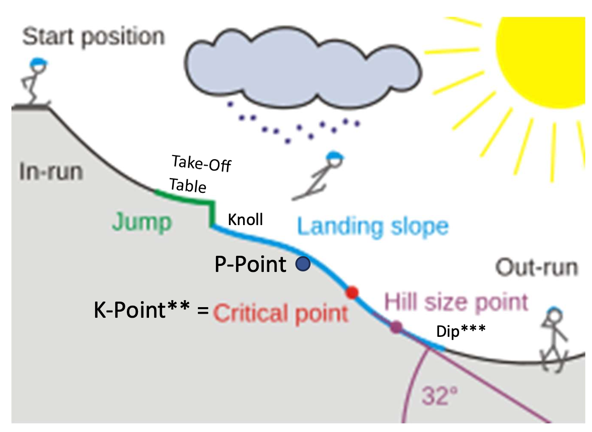
Knoll – the relatively flat part of the landing hill starting at the end of the jump (take-off table) and ending after transitioning to a steeper constant part of the landing slope between the P-Point and the K-Point. Jumping hills are designed for ski jumpers to land after the knoll on the steeper slope that follows.
K-Point – see Appendix for detailed explanation.
Dip – bottom of the landing hill, where the transition to the flat outrun is nearly complete, and well beyond where ski jumpers can be safely landing.
Panking – Yooper term for packing snow with skis while sidestepping down the hill.
Alongside the inrun of the 30m Iron Bowl jump and its scaffold, a 2-foot high snow bump was angled into the main landing hill, creating a 15m capable jump. Although the maximum achievable jumping distance was maybe 45 feet, beginners could experience the exhilaration of ski jumping and aerodynamic lift for the first time.
How time flies! Just 6 years later, I enjoyed my small part in helping prepare the Copper Peak landing hill, holding onto ropes while sidestepping and panking**** the hundreds of yards of the 40° sloped landing hill. Besides watching the tournament, my personal thrill as an early teen was the opportunity to ride the entire Copper Peak landing hill while crouched in an inrun tuck position the entire distance. It was speed to burn, baby and no radar in the area. I am sure that it was the fastest that I ever traveled on skis, and well in excess of 70 mph considering that ski flyers reach the low to mid-60’s shooting down an inrun that is considerably shorter than the landing hill.
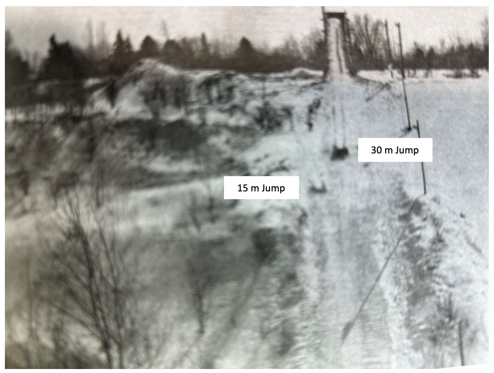
We modified my alpine equipment to partially resemble jumping skis, at least so the ski boot heel could lift from the ski, enabling a forward lean in the air like a genuine ski jumper. With most alpine ski bindings of that era, the back of the ski boot rigidly attached to the ski by a cable wrapping around the heel. By removing the two cable guides on the sides of the ski closest to the heel, the heel was free to lift from the ski.
After I used the modified alpine skis for a few months, Dad obtained a set of used, but actual jumping skis. Real jumping skis with wood-fiberglass composite core and five grooves on the plastic bottom surface! They were 50% wider, 70% longer, and at least 3 – 4 times heavier than my little alpine skis. If I was alpine skiing in the evening following a day of ski jumping, muscle memory made those alpine skis feel like toothpicks.
Those dark blue Elan jumping skis provided an early 70’s luxury Cadillac smooth, muscle car Trans Am fast ride. In a drag race down the landing hill, anyone with jumping skis would surge past the alpine skier like all other cars passing Dad’s ’59 Studebaker struggling up Birch Hill. At 255 cm long (8 foot 4 inches), the jumping skis were 6 - 8 inches oversized for my 5 foot and change height at the time, but I didn’t care.
During ensuing weekends, a few of us youngsters were introduced to the actual sport of ski jumping. While Dad facilitated my interest and introduction to ski jumping, Wally Kusz was my first (and realistically only) ski jumping coach, with all due respect to many others who gave me an occasional tip or guidance over the years. With a distinct accent, as did nearly every first or second generation Yooper, he exuded an infectious enthusiasm. He also had a keen eye for identifying minor deviations from the fundamentals that he knew would yield success on any jumping hill, as he would emphasize;
- “It’s all in takeoff.”
- “Timing is crucial. Don’t jump too early or too late.”
- “In the inrun, keep your shin angle forward, back flat and level, and head up.”
- “When you jump, explode, keeping your chest down, and head level.”
- “Never, ever drop your head.”
- “When in the air, your body follows your head, just like a bird. So, always keep your head up and steady, while looking out over your skis and stretching for the bottom of the hill.”
Wally described the lift during the early stages of flight over the knoll as someone grabbing you by the back of your belt. Until then, my only reference of someone being grabbed and lifted by the back of the belt came from our fourth grade teacher. One day he escorted another misbehaving and then petrified classmate horizontally out of the classroom by the back of his belt, while he frantically hand surfed across classmates’ desks on the way to the principal’s office. Well, that was 1969 classroom discipline.
In a not so obvious parallel to hitting a baseball on the sweet spot of the bat barrel, a perfectly executed ski jump produces longer distances with seemingly minimal effort. The primary elements to achieving that ski jumping sweet spot is nailing the timing exactly with a quick and powerful take-off and transitioning quickly and smoothly to an optimal flight position. The fruits of all that are extra lift, and after clearing the knoll, an extended, almost weightless flight peering over skis and sighting beyond the hill bottom.
While the primary event during the Iron Bowl junior ski jumping tournaments was the 30m hill, we had the opportunity to be ski jumping competitors for the first time. Prior to the 30m big boy meet, some of us competed on the 15m junior hill. I soared to 37 feet and 1st place. I was hooked.
Naturally, that big 30m jump began to quietly taunt us. “Can you handle me?” or in Yooper barnyard language “Or, are you chickens@&t?” So, one Saturday afternoon while the senior ski jumpers were competing at a late season out-of-town tournament, my neighborhood buddy Todd and I traversed the half mile of Caves snowmobile trails from home to the Iron Bowl determined to scale the monster for the first time.
The cardinal rules to ensure safe ski jumping (besides proper technique) include;
- Never jump alone.
- Prepare the hill adequately.
- Ensure mature supervision.
- Use the hill and equipment as designed.
Well, between the two of us that day, we weren’t alone (check) and the hill was in good condition (check). But, we fell short of the last two rules. We convinced ourselves that it would be safer if we limited takeoff speed by starting only halfway up the 30m inrun. Neither of us were educated in basic physics that dictate fighter jets use the full length of the aircraft carrier runway to avoid plunking into the sea.
With our take-off speed compromised, both of us soared into the air and then stalled midair like Wile E. Coyote overshooting a cliff. We should have been holding his “Uh-Oh” sign before plummeting to the ground. The flights were short and impactful onto the nearly flat knoll. It hurt more than a little bit. Both of us wiped out, but being young and flexible, we were uninjured. We had had enough for the day. Being that it was March, the jumping season was finished for the year.
3.3 – Yooper Junior Jumping
The Iron Bowl was our home hill from 1969 thru 1975. During the 1971 jumping season, some of us graduated to the 30m hill. As we previously realized the hard way, appropriate use of the 30m jump involved using the entire length of the inrun scaffold. It was a mental commitment walking up to the top of the 25 ft high scaffold for the first time. Although no one would dare ostracize a first time rider who decided to walk back down, it would be personally embarrassing. For me, it was cool to be at the top of the scaffold with the senior jumpers. Any lingering concerns had been swept aside.
Before launching down the inrun for a practice ride on most small hills, the jumper yells down to a spotter (usually a fellow jumper or coach) on the knoll who has a clear view of the entire hill to confirm that there are no obstructions or people in the path of the skier. Having received a clear affirmative response from the knoll, it’s go time.
Pushing off from the top of the scaffold for my first 30m ride, I settled into the inrun track. Accelerating with each passing evergreen twig marking the inrun track, it took so long to get to the takeoff. And then, the last bough at the end of the inrun finally arrived, and it was time to leap. Even though it was a short flight for the scale of a 30m jump, the flight was much higher and longer than what I had grown accustomed to on the 15m, or the ill-conceived half scaffold ride. Yet, the landing was much gentler. A long ride down the rest of the landing completed my personal victory. After a few days of gaining confidence and doing more than just surviving the hill, it was time to start earnestly addressing details to become a competent ski jumper.
Ski jumping is governed nationally by the United States Ski Association (USSA), organized across the country by divisions (or regions). In the 70’s, there were well over two dozen active ski jumping clubs in the USSA Central Division at that time, encompassing the western U.P, Wisconsin, Minnesota, and northern Illinois. By registering with the USSA, a jumper would receive an ID card and gain access to enter tournaments.
Junior USSA members were subdivided into four classes by age:
- Class 1: 16-18 years old
- Class 2: 14-15 years old
- Class 3: 12-13 years old
- Class 4: 9-11 years old
For Ironwood junior jumpers, the close-to-home 30m tournament circuit was usually scheduled as one day events from late January until mid-February passing through Ishpeming, Iron Mountain, and finally Ironwood. Akin to a small athletic conference, jumpers were quite familiar and knew their chief competition.
After two months of practice in 1972, five Ironwood junior jumpers headed to the first junior meet of the year at Ishpeming. It was my first out of town meet on a 30m hill and an entirely new experience. I was the only Ironwood jumper in the youngest class. It happened to be -20° F that day, but at least there was no wind. COVID didn’t arrive until nearly 50 years in the future, so I was wondering why half of the jumpers were wearing face masks. “Oh, due to the cold? Really? OK.”
Anyway, I captured 1st place in my class. I was somewhere between pleasantly surprised and stunned. In those days before cell phones or internet, my parents had no inkling of the results until I got home later that evening. Riding back from Ishpeming in the dark corner of the back seat while the teenagers talked about girls and everything else under the sun, American Pie played on the car radio, and I quietly clutched that 1st place trophy like an Olympic medal.
Every ski jump has its own unique character, as was the case the following week in Iron Mountain where the junior hill was Big Miron. Whereas the Ishpeming 30m of the prior week had an all-natural inrun, Big Miron’s inrun was all scaffold and steep. Being a small, but sporty 30m, extra attention to the aggressive transitions in the inrun and the landing profiles was necessary. One had to be ready to jump while handling centrifugal forces appreciable for a hill that size. Seasoned jumpers could utilize the inrun curvature as minor precompression just before jumping. The transition at the bottom of the landing (dip) was also quick, so holding a stylish Telemark through the entire landing hill required more skill than usual.

In ski jumping or cross country skiing, a Telemark refers to placing one ski in front of the other, with proportionally more body weight placed on the forward ski, and the boot heel lifted off the trailing ski. In ski jumping, style points are awarded (or preserved) for simultaneously executing a Telemark ski position while landing and holding it throughout the rest of the ride, thereby exhibiting exceptional balance. A Hollywood Telemark was slang for the less skillful, but showy attempt of transitioning to a Telemark position, but only after landing.
Even though the small hill scaffold was not that tall, the climb could still be unsettling for a young jumper accustomed to natural inruns, especially with others whizzing by just 4 - 5 feet to one’s side. On the way up, you had to make sure that your stiff boots didn’t slip on the 37° sloped wooden ‘cattle ramp’ which was never completely clear of ice and snow. Although I neither witnessed nor heard of it happening, it was conceivable that a skier climbing up the scaffold could have a momentary brain fade and while looking back down the hill, swing his skis into the path of a rider zooming down the inrun. At the top, the tight confines limited three, or at most four, jumpers being able to put their skis down, quickly strap them on, check equipment, and compose themselves before being flagged to go.
Big Miron was Therese Altobelli’s home hill. A phenom in her pre-teen and early teen years, Therese received notoriety as the pioneering female jumper of the era, particularly in the Midwest region. She was steady and stylish, competing equally with the rest of us young juniors. As fellow jumpers, we didn’t make much of it. At the risk of sounding politically incorrect in today’s culture, she was just one of the boys.
The fanfare surrounding her wasn’t her doing, but she was friendly, poised, and seemed to take it all in stride, while adults made a big deal about it. Therese just wanted to ski jump. Perhaps her most notable ski jumping accomplishment was a few years later in 1978 when she became the first female to ride the famous 90m Pine Mountain, her home hill. In 2017, Therese was elected to the National Ski Hall of Fame, a forebearer of the female U.S. national team that became internationally competitive during ensuing decades.
3.4 – Iron Bowl Culture
The 1972 – 1974 winters was a growth period for the club. Over the summer of 1971, the industrious GRSC leaders executed on foresight to erect lights on the 30m Iron Bowl jumping hill. Evening ski jumping was ‘on’. The lights were indispensable, an advantage many of the other Midwest ski clubs already enjoyed.
Before then, the opportunities for Iron Bowl ski jumping were limited to weekends. With the ‘state of the art’ mercury vapor lights, from mid-to-late November until early March, jumping was possible nearly every weeknight. It contributed to the number of club jumpers doubling to more than two dozen, with two thirds of us being junior class age (18 or younger). Each of us could complete 5 - 10 practice rides over a 2 - 3 hour period, if we weren’t occupied with digging the ski hill out from the latest lake effect snow.
When convening many winter evenings at the Iron Bowl hill, one becomes acquainted with the jumping styles and personalities of fellow jumpers. There was little formal coaching, but fellow jumpers tended to encourage each other. Most Iron Bowl jumpers in the early 70’s were accomplished high school or former athletes in other sports. In a sense, they were the unintentional forerunners of today’s sport culture awakening to the physical and psychological benefits of youngsters participating in multiple sports across all four seasons.

Left: Dad as a young teenager with his solid hickory skis and three grooves roughly carved into the bottoms. All purpose leather boots attached to skis with leather overstraps, metal front throws and cables. Attired with collared undershirt, Christmas sweater, baggy wool pants, and brimmed cap. Savonen dairy farm and gravel pit in background.
Right: The author as a 12 year old with my Northland composite five-groove plastic bottom jumping skis, although oversized for my stature. Nylon-leather jumping boots attached to skis with all metal cable throws, cables, and toeplates. Attired with winter sweater, stretch pants, soft knit cap, and choppers (Yooper for leather mittens with inner wool liners). Goggles and helmets were a thing of the future.
When I was in elementary school, most of my fellow local jumpers were in high school. It included football and wrestling stars and family legacy jumpers, with colorful personalities amongst all of them. The unique challenges and thrills of ski jumping attracted a diverse group.
One of our all-sport high school stars was having a mediocre ski jumping evening that didn’t measure up to his own Type-A expectations, despite being unable to consistently give attention to the sport. At the bottom of the hill after what turned out to be his last jump of the night, he ripped off his skis and threw them like javelins twenty yards into the deep snow while expletives cascaded across the walls of the Iron Bowl ravine. We didn’t see him much after that.
One of the senior cats still jumping well past age 40 (after he started to ski jump in his 30’s) was Bob Shea. Although Bob wasn’t a ski jumping Olympian, he had the heart of a ski jumper and was part of the ski club soul for many years.
By the late 1970’s, when there were less than a handful of us still jumping locally (by then at Wolverine), Bob would periodically take a break from cross country skiing to watch a few of our jumps. After complimenting one of my practice rides, he did not hesitate to plant the vision of going to the Olympics. Little did he know that that goal was already quietly embedded in my mind. But, it gave credence to my vision when hearing someone else speak out loud to the belief that it was achievable.
Another fellow Iron Bowl jumper was athletic, but he wasn’t an athlete, meaning he couldn’t muster complete commitment to the sport. That didn’t lessen the enjoyment he got from recreational participation. Typical of most ski jumpers, he was part of a ski jumping family legacy.
On the side, he was reputedly active in small scale pot distribution. Whereas today, each new cannabis business opening of the now multi-billion-dollar Michigan industry is celebrated with mayoral ribbon cutting and a front page story in the local Daily Globe newspaper, in the 70’s it was necessarily underground and stigmatized. Anyway, this free spirit and purported cannabis distributor had a fun loving, outgoing personality.
When putting on his skis at the top of the Iron Bowl scaffold one evening, he stepped into the ski toeplates as usual, but absentmindedly forgot to attach the cables to the back of his boots before launching down the inrun. OK, admittedly the Iron Bowl lights did not fully illuminate the top platform of the scaffold and he wasn’t the most detailed oriented guy, or maybe it was just an extra hazy day.
In retrospect, we watched an amazingly smooth inrun ride until he reached the end of jump. At that point, Kaos triumphed over Control. Normally, our Maxwell Smart had the habit of letting his skis spread apart just before take-off, abandoning the set inrun tracks. Perhaps it was his ‘drawing outside the lines’ metaphor for life.
But in this particular situation, he was fortunate. As he cleared the jump, a detached left ski dived to the left and a similarly free right ski dived to the right. In ski jumping slang, he was ‘rolling down the windows’ as he frantically windmilled his arms while flying past those of us standing on the knoll.
The center of the landing hill waited to receive him as he completed his 35 mph airwalk. Fortunately, due to good jumping hill design, our pal encountered a soft landing. He achieved an unofficial distance of 40 feet, although I think his skis flew further. He was uninjured, unfazed, and after trudging through the deep snow on both sides of the landing to retrieve his wayward skis, he was ready to go for another ride. We all hooted and laughed, including him.
As detailed later, although serious injuries are rare in this sport, the worst case situation is a head injury, if impacting violently with skis or ground. Helmets didn’t become standard ski jumping equipment until stipulated by the USSA in the mid-70’s. At that time, even ski flyers usually wore only a soft cotton ski cap or beanie. Some ski flyers wore neither goggles nor any head covering. Peter Wilson of the Canadian National Team garnered 4th place in 1973 on the huge ski flying Copper Peak hill. As captured below, he approaches his landing without compromising style.
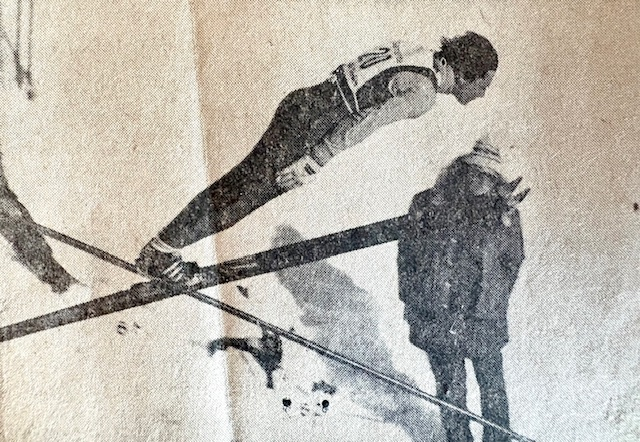
However, by the late 70’s, anyone expecting to compete in a USSA sanctioned meet had to wear a helmet. The first editions of ski jumping helmets were not stylish. The available soft plastic cap resembled an early 1900’s bathing cap adorned with colorful soft foam rectangular ridges. For that brief period, it could be embarrassing to a style conscious teen, but we were all in the same boat probably thinking, but not saying “Hey, you’re a circus clown, too.”
Thankfully, just a couple of years later, the equipment standard had graduated to a classical hard outer shell ‘sphere’, akin to what contact and automotive sports had been using for years. With that type of helmet and goggles in place, I felt very safe in my own little world, regardless of the size of the hill or others around me.
During the span of 1972-1974, I was fortunate to be the Ironwood Schools city alpine ski champion in 6th, 7th, and 8th grade. It included the disciplines of slalom, giant slalom, and downhill. In the woulda category, I woulda been the 5th grade champion, too, but I took the wrong side of the last gate in the slalom run. While in the starting gate, we were warned about the tricky location of the last gate, even though the turn itself would have been easy to make. But, it was too much for a fifth grader in his first ski race to process, when notified seconds before launching down the run.
Theron Peterson, the veteran Ironwood High coach of alpine skiing and several other sports, urged me to join the alpine team. I was honored, but I regrettably felt it was necessary to decline. During the compressed winter season, I didn’t know how I could do justice to both ski sports and for that matter, how my parents could absorb the additional cost of a second sport. Nevertheless, periodic recreational alpine skiing provided valuable cross training that benefitted ski jumping balance and agility.
As mentioned by Supercynski (1), a limited number of years remained for continued use of the Iron Bowl, since the Ironwood municipal authority was clamoring for more landfill space in the Caves property that they controlled. And even more problematically, with years passing since the underground mines were abandoned, the steadily rising water table would eventually peek above ground in the bottom of the Caves ravine.
4 - Intermediate Hill Circuit
During the 70’s and 80’s, the upper Midwest ski jumping tournament circuit was distributed across the western U.P., southern half of Wisconsin, eastern Minnesota, and northern Illinois. Until the late 70’s, the Gogebic Range Ski Club had a nucleus of ski jumpers who maintained the local ski jump, trained, and traveled together nearly every weekend to a Midwest tournament from the first full week of January through the middle of March. Most of the intermediate to large hills comprising that circuit are mapped below.
Most of us had our own favorite hill, for various reasons. Perhaps it was the air currents on the hill, the detailed attention that the local club applied to hill preparation, the efficiency of meet registration (on-site in this era), or the ease in traversing the snow paths up the hill and scaffold. On each weekend, there were usually two or more senior level tournaments simultaneously occurring on intermediate and large hills somewhere in the Midwest circuit. A USSA coordinated schedule enabled ski clubs to reserve their calendar spot year after year.
As I progressed through a relatively brief jumping career (1968 – 1981), I had the privilege of riding most, but not all, of the intermediate and large ski jumps in the region. However, due to meet cancellations or personal scheduling conflicts, I never had the chance to ride the ‘far south’ hills in northern Illinois, i.e. Rockford and Fox River Grove.

4.1 – Wolverine Regenerated
In the early 70’s, there were regular attempts at using the scaled down and repaired Wolverine scaffold, to fill the need for a hill bigger than the 30m Iron Bowl. The scaled down Wolverine in the mid-to-late 60’s was handicapped in that it was neither shaped to contemporary specifications nor consistent with its original design roots before a storm raised havoc. It was a hybrid of sorts. The partially salvaged inrun had a steep top half, followed by a sharp transition to a long, effectively flat takeoff table. It couldn’t be used for sanctioned competition although it still provided big air ride for recreational purposes.
It took forethought, expertise, and determination by several stalwart members of the ‘Greatest Generation’ to get Wolverine rebuilt and back on stage in 1975. To bring Wolverine back to life, the ski jumping community was fortunate to have the unflinching commitment of a relatively small group, led by former jumpers, such as Wally Kusz, Bob Shea, Frank Pribyl, Charlie Supercynski and others that I apologize for failing to recall or being unaware. Others with little personal ski jumping history were also very active, committed supporters, such as Ernie Mattson, Ed Lakner, and Don Bull. Their altruistic support was extensive and inspiring.
The entire Wolverine jumping hill had to be re-contoured to the updated profile. Charlie Supercynski led the redesign and summarized the cost efficient material and labor (1). It took intensive effort by a modest size crew to get Wolverine back on its feet, including re-profiling the landing hill, reshaping a longer knoll, reworking the entire inrun slope by moving tons of earth, and constructing an entirely new scaffold on top of it. With the complete revision of Wolverine to prevailing 1975 hill standards, the region could once again point with pride to the historic 55m (some say 50m) ski jumping hill.
Not to rehash its rich history prior to the 1975 rebuild, the new Wolverine established an invaluable bridge to prepare local ski jumpers for larger hills in addition to attracting national level competition. Before Wolverine was re-established in 1975, I was impressed how a few of the more experienced Ironwood jumpers, such as John and Mike Kusz, Bruce and Gene Harma, Russ Anderson and several others could venture to ride the large 90m hills like Pine Mountain or Westby, even though their preparation was limited primarily to the small 30m Iron Bowl, the scaled down Wolverine, or brief experiences on a few other intermediate size hills.
Wolverine had a long reputation of riding like a bigger hill, due to the prevailing northwesterly winds in the Ironwood Township Section 12 Road valley. The face of the bluff upon which Wolverine was built points directly into that wind (and did I mention toward the old Savonen homestead?). These natural headwinds provide jumpers with an airstream comparable to the next larger hill class. A steady headwind favors the aerodynamic lift of birds, kites, airplanes, and ski jumpers. On sunny days with a gentle breeze, it was not unusual to see a hawk or eagle hovering motionlessly high overhead.
After executing an excellent take-off, a ski jumper transitioning into flight position was met by an airspeed differential (skier speed + opposing headwind velocity) that produced an exhilarating lift. With the lower and more lateral flight trajectory of the updated Wolverine hill design, a ski jumper had to take full advantage of the airlift to be successful.

With Wolverine’s reputation for big air and early season lake effect snowfall, it influenced the U.S. national ski jumping team to jump at the opportunity to be the first few to practice and compete on its updated version, prior to the arrival of the regular competitive season.
The 1975-1976 season could also be characterized as a two decade (1960 – 1980) highpoint for local ski jumping, accentuated by the inaugural December 1975 tournament. Besides the U.S. national team and other regional riders, the tournament included seven local jumpers, five of which were in their last year or two of junior class age. Within the next three years, life’s circumstances dictated that all but John Kusz and I had effectively retired from the sport, and I couldn’t stay much longer, retiring by 1981.
During practice on Wolverine, if taking full advantage of top gate inrun speed, you could enjoy long flights. If still 7 – 10 feet above the landing hill after clearing the knoll, you could peer over the skis to the bottom of the hill slope and outrun.

One of my most memorable rides occurred on one sunny, but otherwise unremarkable Saturday afternoon practice. Only three of us were riding one day, so our small crew alternated between being the jumper at the top of the inrun or standing at the knoll to flag the next jumper.
As I cleared the knoll during one flight, I knew it was a very good ride. Like other sports when an athlete is ‘in the zone’, time pauses and sound nearly ceases. All I could hear was a very gentle tap-tap as my ski tips lightly touched each other a couple of times during flight. And then, after what seemed like a long time, the ride had come to an end, and I landed softly as a feather.
An additional benefit of a northwest facing ski hill like Wolverine was that it was mostly shielded from direct winter sunlight which can soften or melt snow during mid-winter thaws, thus requiring extra effort to keep the inrun covered with snow or bring a premature end to the jumping season. The Wolverine inrun and landing were also protected from direct sunlight most of the winter day by trees lining its southwesterly side. (Less favorably, the Copper Peak ski flying hill faces southeast, which increases the challenge of keeping the massive inrun and landing hill prepared with adequate snow covering, especially if a mid-winter thaw occurs).
The first full winter (1976) of new Wolverine tested our stamina for hill preparation since snowfall totaled 265 inches, almost 100 inches greater than an average year on the Gogebic Range. By then, with the number of regularly active ski jumpers in the Ironwood area dwindled to a less than a dozen, it would have been impossible to keep both the Iron Bowl and Wolverine hills in shape. So, without lights on Wolverine at that juncture, jumping practice was limited to weekends.
As mentioned, although the early arriving and late departing snow in the Ironwood area would theoretically enable the longest jumping seasons in the Midwest (from mid-November until late March), the sheer effort for a small team to keep the hill in ski jumping shape throughout the winter did not afford more jumping uptime. More so, once the out-of-town ski jumping meet circuit commenced in early January, the number of weekends practicing on the home hill decreased further.
On an intermediate size hill, such as Wolverine, a solid day of practice amounted to anywhere from 8 - 12 rides. On a few rare days, the number of rides maxed out at greater than 15. Trudging up the landing hill and inrun would eventually be tiring, even for a young, fit athlete. In the late 70’s, when our ski jumping was largely limited to weekends, I personally totaled 175 – 225 jumps for an entire season, including out of town meets. In that regard, I envied some of my peers who had home hills with a rope tow or T-bar which facilitated 25 or more rides a day and a squadron of youth and adults to keep the jumping hill in shape, while generally dealing with less snowfall than Ironwood.
More so, a majority of the other ski jumping hills had lights, as did the 30m Iron Bowl before it had to be abandoned. We competed against clubs where zealous jumpers could accumulate more than 400 jumps a year. By the way, the governing International Ski Federation (FIS) is not prone to sanction international or ski flying hill meet nowadays if the facilities do not include a lift for the ski jumpers from the bottom of the hill to the top of the scaffold. C’mon, man. The hill climb was part of our cross training! In some international circles, there is even loose conceptual discussion about creating a fully enclosed tunnel along the entire length of the ski jump inrun. What?!
4.2 – Suicide Hill
A personal milestone in 1977 was riding the largest (70m) jump in the Ishpeming Suicide Hill complex for the first time. Listed at that time as a 70m, equivalent to the smaller of the two standard Olympic hill sizes, it represented a step up in hill size relative to Wolverine. The largest jump of the complex grew in stature from being rated as a 70m in the 70’s to now being labeled as a K90. (See Appendix 1 for explanation of ‘K’). Located in a picturesque valley, more recently it has jump sizes classified as 13m, 25m, 40m, 60m, and 90m. It also contained a cross country training center that constituted the U.P. Nordic Ski complex, which over the years has been affiliated with U.S. national ski organizations.

Rich in ski jumping history, the Ishpeming / Negaunee area has hosted ski jumping competitions as far back as 1882, which influenced the location of the U.S. National Ski Hall of Fame. Its inaugural tournament was held in 1925 and is one of the few remaining active ski jumps in the U.P. (The Ishpeming Suicide Hill is not to be confused with a smaller ski jump in New Boston, Massachusetts also named Suicide Hill that was destroyed by a storm in 1938. Uh huh).
What might be viewed as a culturally insensitive name for the Ishpeming hill was coined in 1926 by a local reporter upon witnessing a skier suffer an injury, although non-fatal. He defended the name, quoted as saying “Sure, it’s a good hill, but why not have a little color about it.” That attitude reflected the early 1900’s attitude to amplify ski jumping dangers to attract crowds (and readers), before the broader awareness and increased sensitivity to the tragedy of suicide was realized. Nevertheless, the name has stuck to this day.
Suicide Hill was an annual stop for the U.S. national team, who were respected, if not envied, for their flashy uniforms, equipment, and accomplished coaches. These rock stars of the ski jumping circuit warmed up before the meet by pushing a soccer ball around the outrun, before the U.S. became a competitive participant in World Cup soccer. They also practiced stationary leaps from the ground into flight position on top of a teammate’s extended arms.
If you could competently ride Suicide, most ski jumps (outside of the ski flying hills) were within reach. As I sat with several senior Ironwood jumpers having breakfast at a local restaurant before heading out to ride Suicide for the first time, I couldn’t help thinking that the rest of the people in the restaurant were going on to their safe, mundane day, while we would be flying through the air and ignoring risk to life and limb.
You still had to walk up a narrow scaffold while a jumper zoomed down the inrun a few feet away. And, you certainly didn’t want to have so short a jump as to land on the ignominious ‘cowpath’. That was the narrow snow packed trail that forms across the upper knoll where hill personnel and officials regularly walked to and from the other side of the landing. Of course, they didn’t traverse across the knoll during when a jumper was coming!
As compared to some other hills, Suicide seemed to consistently reward distance when a jump was well executed. The curvature of the inrun transition to the take-off table was tighter than most intermediate size hills, imparting more compression when approaching the take-off. Even today, the take-off table is designed with at least one degree more hang (11.5°) than most other hills. This aligns the flight trajectory more closely with the steep (36.5°) landing table. Headwinds on this larger hill were not greater than that of Wolverine. Spurious gusts were uncommon since the ski jumping complex resided in a natural bowl.
As with any walk in life, one can find humor during incidental, but unique circumstances. At one Suicide Hill meet in the 70’s, the length of the outrun was extraordinarily short and slightly downward sloped. Despite hill design standards existing for inrun curvature, take-off angle, knoll shape, and landing hill slope (and having been more refined since then), the specifications for outrun profiles may not have been specific.
Jumpers ride through the dip of the steep landing onto the flat outrun with the highest speed of the entire ride. At most hills, there is adequate distance to slow down and ease to a stop with a combination of snowplow or other combination of parallel turns. Perhaps the outrun was intentionally shortened so a few more paying cars could be squeezed into the surrounding bowl. So, skiers could not absentmindedly glide to a casual stop. After completing the primary purposes of jumping, flying, and landing, one still had to alertly initiate a sliding stop immediately after the dip to avoid pounding into the snowbank at the end of the short outrun.
During the second day of this particular meet, the accumulated effect of skiers aggressively skidding to a stop turned the outrun surface into an ice rink. Amongst jumpers in queue at the top of the scaffold, we snickered when we witnessed any jumper ahead of us run out of outrun length and crash into the snowbank. It was ski jumping gallows humor at its best.
Yet, we marveled at one jumper who adopted the unprecedented practice of starting to snowplow brake at high speed while still on the steepest part of the landing. It was a freakish athletic move predating Bo Jackson’s famous horizontal run along an outfield wall in 1990. By the tail end of the meet, the hill management finally placed hay bales at the end of the outrun to cushion skiers with inadequate braking skills or attentiveness.
4.3 – Bulldozer
Bulldozer was a 55m jump carved out of the same ridge where Iron Mountain’s famous 90m Pine Mountain jump stood. It was uncommon for a hill of Bulldozer’s stature in the upper Midwest to have a mostly natural inrun and landing, but bulldozers accomplished that.
I participated in a two Bulldozer meets, including one in 1977. Without a scaffold, it appeared smaller than it was when standing next to its big Pine Mountain brother, but Bulldozer still rode like a larger intermediate sized hill, comparable to Wolverine. I placed well in the meet, but a small, yet gratifying moment was being noticed by Ed Brisson, the previous head coach of the U.S. national team. A giant in the sport, he was involved in countless aspects of ski jumping for over 80 years (involvement years, not his age in years), in addition to being head coach for the Central Division, and later, the U.S. National team. He led advancements in training coaches, hill preparation techniques, and safety.
My interaction with him was brief, but as we know, a lasting impression can happen in an instant. One of the practice days was plagued by crosswind gusts that can create havoc with a ski jumper’s flight. Naturally hands-on, Coach Ed positioned himself on the knoll that windy day, volunteering as the flagman to signal each jumper to proceed when he sensed that the gusts had temporarily subsided.
On my best practice ride in terms of distance and smoothness, I noticed that I landed on the far right edge of the wide landing, barely a foot or so from the deep snowbank. I didn’t think much of it at the time, but during my next walk up the hill, Coach Ed complimented me for handling the stiff gusts so well, while lightheartedly apologizing for flagging me into it. Since Ed was a born Yooper in Munising (which had its own history of ski jumping until the 1980’s), his personable approach shouldn’t have been surprising.
4.4 – Circus Acts
Early 1900’s ski jumpers persistently encouraged the perception of being bold and daring stuntmen, which they were. It was common for a carnival like setting attracting huge paying audiences. No less famous than P.T. Barnum’s circus incorporated ski jumping into their early venues. A professional ski jumping association actually formed in 1929, but disbanded by 1934, not for lack of demand or paying audience, but for lack of available, uninjured jumpers.
Thrills and spills were promoted as the reason to come and see exhibition riders attempt somersaults and other amazing gymnastic feats with ski equipment and scaffold construction that would astound the most fearless jumper today. To attract audiences, they reinforced the stereotype of a dangerous sport. Pictures of various ski jump scaffolds, for exhibitions of that era, attest to the laughably flimsy construction that would not pass any safety protocols in today’s litigious society.
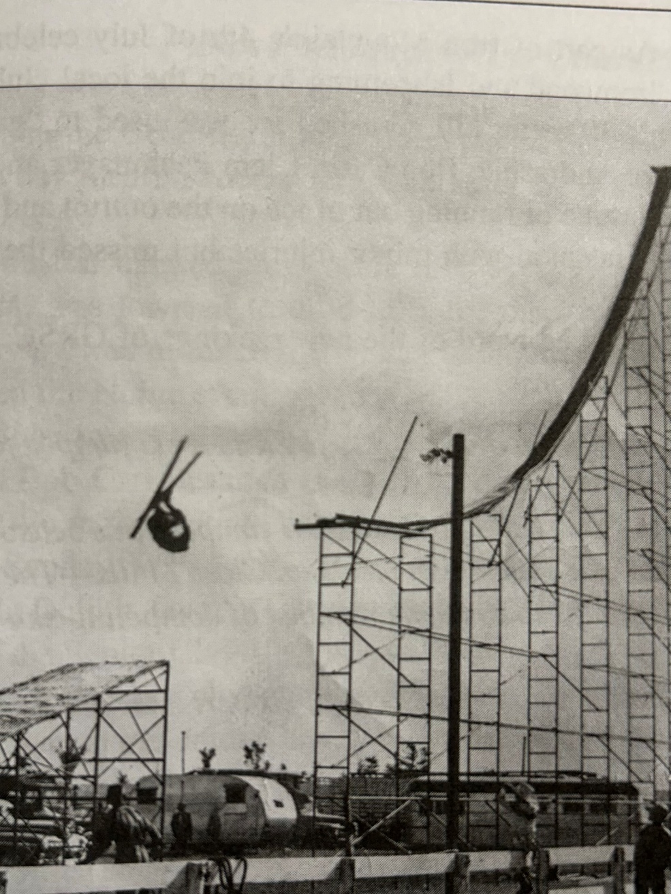
Henry Hansen performing his signature somersault at some unknown location, sometime in the 1940’s. He was one of less than a handful that did this amazing stunt over a hundred times around the country. Fellow ski jumpers would call him ‘crazy in the head’. He claimed no serious injuries. Note the rickety super steep temporary scaffold construction with no side rails and at most a 4 foot wide inrun. And he did that with full size, heavy hickory jumping skis.
Even if fear entered a ski exhibitionist’s mind, these macho daredevils of yesteryear couldn’t surrender to it amidst their ski jumping buddies and responsibilities to the paying public. But, some level of trepidation had to be a companion for any sane daredevil while tiptoeing up a matchstick scaffold.
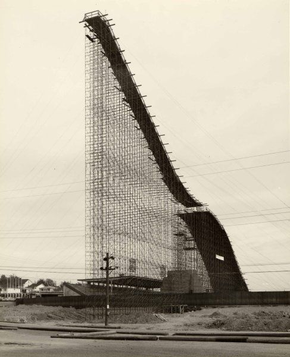
Temporary inrun and landing hill scaffolds for competitive or exhibition jumping were built in population centers, such as Chicago’s Soldier Field, the Hollywood Bowl, the LA Coliseum, and even a few indoor venues, like New York’s Madison Square Garden. The temporary ski jump constructed at Soldier Field hosted over 60,000 spectators and 140 jumpers. No, this is not photoshopped.

In addition to jumping competitions, acrobatic exhibitions were performed on these hastily constructed jumps. Four ski jumpers from Ironwood contributed to at least one Soldier Field exhibition by performing the diamond formation. The diamond formation involved four ski jumpers proceeding simultaneously down the inrun and through the air. The formation consisted of a lead skier traveling down the center of the inrun track like usual, followed immediately by two side by side (wingmen) skiers, and trailed by a fourth person.
The possibility of a mishap multiplied if the wingmen came too close to the inrun walls or collided with each other. Since both wingmen had one ski riding in rough snow outside of the established inrun track, it would be an uncomfortable approach to the take-off. Being less than a foot apart at take-off, the wingmen had to ensure that their ensuing flights did not converge, but diverged. Of course, if any of the first three riders fell, the fourth and last jumper could be joining a pileup.
One fine day immediately following the conclusion of a Wolverine meet in 1976, someone had the wild hair idea that we should enter carnival mode and recreate the diamond stunt. For our formation, I was nominated as the lead rider which is the easiest job (if you didn’t fall). Before launching down the inrun, my cohorts apprehensively emphasized to me to stay crouched after landing to maintain speed and avoid being caught from behind.
And away we went. There were no collisions, but since I was the lead rider, I couldn’t see what was transpiring behind me. By the time I had landed and arrived at the outrun to peek behind, I saw a splintered diamond far behind. One wingman had spun out, but the tail rider was able to sidestep him. It wasn’t a professional exhibition and would have needed more practice and coordination to resemble what local ski jumping stuntmen performed 40 years earlier in front of a huge Chicago crowd. And to think that the USAF Thunderbird pilots keep four jets within 18 inches of each other in their diamond at the speed of sound! Our diamond in the rough was fun. We never tried that again.
4.5 – Crazy Long
Another more common long-standing tradition in regional ski jumping meets was the long-standing jump. After the formal competition concludes, some tournaments offer jumpers one more optional ride to compete for long-standing jump honors where distance matters, but not style. Without concern for preserving style points, a more aggressive go-for-broke approach could be attempted, even though the longest jumps are generally accompanied with superior style.
After completion of the formal meet, many jumpers are prone to forego the long-standing jump competition. They may want to get an early start on the Sunday evening trip home, especially if they were not in the running for awards from the formal competition. And, if they had no realistic expectation of cranking out an exceptionally long long-standing jump, it was time to put the skis away. But, with formal tournament tension dissipated, the better jumpers often enjoyed one more ‘free’ ride. Pragmatically, the long-standing jump competition also filled time while the official tournament results were being compiled.
By the usual rules of ski jumping and even in a long-standing competition, one cannot fall or touch snow with any body part. And, even if the longest standing jump of the day exceeds the existing hill record, it does not change the official hill record, since the record only applies to official tournament jumps.
At the completion of a Wolverine meet one Sunday afternoon in 1980, the organizers staged a long-standing competition. Being an average ‘B’ class senior jumper now that I had graduated from the junior class the prior year, it would be unusual for me to compete in the long-standing jump against the U.S. national team and other ‘A’ class riders. However, an unexpected loophole was created, stipulating that long-standing competitors could start from any gate of their choosing. So, while I had milled around the middle of the senior ‘B’ class pack during formal competition, the free selection of a starting gate presented an opportunity.
When I got near the top of the scaffold and walked past the U.S. team members on my way to the top gate, they were incredulous. Kip Sundgaard, one of the U.S. national team jumpers, peered up from his lower gate and blurted “You’re crazy”. I accepted his statement as a badge of courage, insanity, or both. Having always used the top gate during practice days at Wolverine and rarely threatening the absolute bottom of the landing hill, I thought nothing of it. Of course, he (or they) could have used the top gate, too, but elite jumpers would have exceeded the safe landing hill distance.
With the additional speed of a well-worn, icy inrun track at the end of a tournament and my good take-off, I catapulted over the knoll higher than ever before. There was acute awareness that this trip was exceeding normal fly zones. When Wally used to say stretch out over your skis and sight the bottom of the hill, I didn’t picture it coming up so quickly to meet me. Unaccustomed to the view, I prematurely backed out of flight position. The result was that I landed so much shorter than the initial trajectory offered. By landing far back on my heels, I spun out harmlessly, but disappointedly, at the bottom.
A top tier jumper accustomed with toying the extremes of landing hills would have exploited the trajectory, nailing a jump well beyond the hill record (albeit an unofficial distance as mentioned). What a missed opportunity for me! On my walk up the hill afterward, I was saluted by Bob Shea saying “You had so much height you looked like Checko.” Chester ‘Checko’ Kusz, brother of Wally, was a powerfully stocky and exceptionally accomplished jumper during the heyday of an earlier generation of Ironwood jumpers.
5 - Personal Insights
5.1 – Spotty Training
There was no organized off-season training in the local Gogebic Range ski jumping club in the 70’s. I assumed that other ski jumping clubs with a sizable number of junior and senior jumpers had a comprehensive off-season training regimen. I am sure that was the case for the bigger clubs, especially if inclined to mimic the national team members that grew out of those clubs. I would overhear that the national team jumpers were wunderkinds of gymnastics and trampolining. Foreign to me, it was a cross training activity that instilled awareness and control of body position while in the air.
Off-season for me meant doing other sports, mostly baseball and basketball. I also weathered a season of high school freshmen football. The most memorable moment was getting hit so hard in a one-on-one blocking drill by the star junior running back that it broke my face mask and left me in a daze. I did remember it, so it was memorable!
The first attempt at intentional off-season training involved an unremarkable sophomore season of cross country running. Later, when about to play a pick-up baseball game with the cross country team and its coach, he snarked “I hope you’re better at baseball than running”. Hah! After abandoning those experiments by my junior year, running sprints up the 36° slope of the Wolverine scaffold in the middle of hot summer days seemed like a worthwhile investment.
With credit for ingenuity, around 1975, John Kusz welded together a unique leg press contraption approaching the size of a Yugo (not quite but) which imparted resistance in the vertical and partly forward direction simulating one lifting out of the inrun position. As a result, I am sure that my leg strength leading into that ski season was as great as ever.
As much as it enhanced leg strength, in retrospect it may have degraded my explosiveness and quickness in transition to flight position crucial for ski jumping glory. Or, maybe I was rationalizing a decades old argument then prevalent in sports like baseball which used to frown on weight lifting, but is now an integral part of a comprehensive twelve month training regimen. Whether coincidence or unrealistic personal expectations, my jumping season that followed was disappointing. Yet, the pros and cons of sport-specific training which approximates, but does not replicate, what the body is asked to do in a targeted sport has been rigorously debated in coaching circles.
In September 1977, I was honored to be invited and participate in a five day Junior Development training camp at Madison, Wisconsin (for only $90!). With most of the expenses paid by the USSA (and complimented by GRSC), it was a progressive initiative for the purpose of cultivating candidates for the future national team. Twenty of the most promising Central Division junior jumpers were invited.
Madison (Middleton) was at the forefront of artificial ski jumping surfaces in the upper Midwest in the 70’s. The early generation plastic inrun and landing hill consisted of foot long ‘hula skirt’ fiberglass strands attached to a metal underlay resembling a chain link fence. Water was fed down the inrun track to ensure slipperiness. Instead of following the centuries old process of waxing skis, it was advised to apply green Palmolive brand dish soap to our skis to enhance inrun speed. Someone’s kitchen counter may have been missing the soap bottle that now sat on a ledge at the bottom of the scaffold.
We were advised to not use our best skis because unlubricated friction could occur at high speeds, which would cause fiberglass film to adhere permanently to the relatively soft plastic underside of the skis. Since I only had one pair of skis, I had no choice, but they were not worse for wear after the experience. However, one of the jumpers did fall and break fingers caught in the metal mesh underlay of the landing. Ouch.
Fortunately, the technology for artificial inrun track surfaces, skier’s inrun positioning and equipment have evolved considerably since the mid-20th century. You can play your own ‘Spot The Difference’ exercise when viewing the contrasting illustrations below.
Although not sophisticated compared to athletic training camps today, the opportunity to participate in the 1977 training camp with my regional peers was a great experience. It introduced many of us to dry land training and the first ski jumping experience on a plastic hill. It was surreal to be jumping in 75° weather. We rode the 20m hill for the majority of the camp, but some of us were allowed to ride the 60m for a couple of days.


As a mild disappointment, I did expect more coaching input on technique. Admittedly, I was too shy to push for it. With a contingent of nationally known coaches, the only personal feedback that I received was that “you have strong legs, you’re a strong jumper”. That was nothing new. Even Mom would always say “you and your sister have strong Perttula legs”, which were, of course, inherited from her side of the family.
Anyway, I had received this well intentioned “strong legs” compliment several times over the years from other ski jumping parents or coaches. At one Ishpeming meet in 1974, the father of one of my jumping peers unintentionally gave me the backhanded compliment of “You get so much height off the jump. If only my son could do that, he would be unbeatable”. I replied “Ah, OK, thanks.”
I did leave Madison with confidence that I could compete on an equal basis with up-and-coming Central Division peers. Perhaps the underlying objective of the camp staff was to observe and judge the potential of each camper. This was before highspeed cameras, air tunnels, computational fluid dynamics, and other detailed analytics became increasingly available to national teams in the 21st century. I had to accept that any coaching insight would be limited with only a few days exposure to a squad of junior jumpers mostly unfamiliar to them.
5.2 – Hilltop Strategy
Beside flying through the air, the next best experience for a ski jumper may be the anticipation at the top of the inrun scaffold before cascading down the inrun. After navigating the climb up the 35° - 38° icy ‘cattle chute’, strapping on skis, and waiting in queue for your turn, life becomes simpler. The focus is on adjustments to make relative to previous ride(s), and visualize the next jump being the best jump of the day. Then, as you have done many times before, you launch down the inrun, armed with a positive expectation, not fear.
With a half dozen or so jumpers in the immediate queue at the top of the scaffold, the banter is unique to the sport. In ski jumping, you are competing against the hill and yourself, more than the competitor next to you. In this respect, it is akin to golf or swimming where you are applying your skills to the physical surroundings, not directly against other competitors. As a courtesy, one jumper may note to the others an abnormal snow condition in the inrun track or landing hill, for example. “Have a good one” is just one commonly expressed ‘final’ encouragement.
While some jumpers continue to chatter at the top of the scaffold, it can also be a sanctuary of sorts, while others quietly check their equipment and mentally follow their pre jump ritual. It is revealing that as the hill size gets bigger, there is considerably less conversation at the top.
Although inaccessible to the public during a tournament, the view from the top of the scaffold is arguably the best location to watch ski jumping, besides the judges’ stand located on the side of the landing hill. As the jumper leaves the take-off, rises over the knoll, and descends out of view, an experienced ski jumping observer from the top can quickly ascertain if the ride was indeed a ‘good one’, even if he can’t actually see the rest of the ride.
Of course, if the jumper doesn’t reappear a few seconds later at the distant outrun, then the ride was less than a ‘good one’. And if the flight was already going awry before he descended out of sight, it would not be surprising if the jumper fell. Whether due to a fall, hill repair, electronic malfunction in the recording equipment, or someone or some dog wandering across the outrun, one had to be mentally prepared while in final queue at the top of the weather exposed scaffold that there could be an extended delay.
A consequential part of a ski jumping tournament is to manage one’s time and activity before and between tournament jumps. On meet day, practice jumps were usually allowed until noon, when the hill was closed for final hill preparations prior to a 1 pm tournament start. During this lull and the 45 minutes or so between subsequent tournament jumps, there are personal strategies to stay warm and loose, while not missing one’s spot in the jumping queue at the hilltop.
If it’s subzero outside, one can’t stay limber if succumbing to the temptation to be comfortable, but inactive in a nice, warm vehicle. Yet, if one starts the journey up the landing hill too early, you’ll be stiffening while waiting at the bottom or top of the scaffold, often in blustery conditions. Awareness of one’s spot in the meet sequence, and progress of the meet has to be managed. At some point, one has to embrace the weather by stretching and moving around, while building readiness for the upcoming high speed experience.
5.3 – Zoom With A View
Anyway, the top of most ski jumping scaffolds provides a beautiful panorama. In the hubbub of a ski jumping tournament, most jumpers do not have time to appreciate it. One such commanding view is from the top of Suicide looking down into the parking lot bowl far below.

Another particularly unique view was from the top of the Tri-Norse club’s hill near Wisconsin Rapids. In the early 1900’s, Norwegian immigrants were determined to erect a ski jump on a modestly sized geographical ‘pimple’ in the predominantly flat south central Wisconsin landscape. From the top, one could spin 360° and see nothing but a vast evergreen forest landscape. Similarly, the still active Iola ski jumping complex also exists in the south central Wisconsin farming country. It is yet another example where cultural determination propagates this sport even if a mountainous terrain is nowhere in sight.
Copper Peak is the largest North American ski jump and still the world’s largest artificial ski jump no matter what some other ski jump devotees might advertise. It boasts of gorgeous views of multiple states and Lake Superior from the top of a 240 foot tall tower and 469 foot long inrun. The experienced ski jumper or ski flyer may be reasonably comfortable with a supersized ski flying hill in Europe, since the inruns are usually integrated to superior mountain landscapes. But, it requires a different type of mental fortitude climbing Copper Peak, since it rises high above the surrounding countryside like an amusement park ride on steroids. Fun fact: The tallest ride at Cedar Point, a popular amusement park in Sandusky Ohio, did not surpass the 200 foot height until introduction of the Millenium Force ride in year 2000, or more than 30 years after the Copper Peak tower was built.

One summer early in Copper Peak’s history, a few U.S. ski flyers camped overnight on the tower summit. Other than enjoying the view, that sleepover was intended to psychologically acclimate first time Peak flyers to the unique height prior to the upcoming winter meet. Still, if it happened to be a breezy summer night, it would be a cool customer indeed to get any sleep with the CORTEN steel scaffold swaying up to 18 inches, and fresh U.P. air whistling through the walkways of chain link fencing and open metal floor grating.
Before good ol’ Wolverine was abandoned three decades ago, it also provided a more modest, but inspiring view of Ironwood Township, including a distant peek of Copper Peak, as well as the Big Powderhorn alpine facilities. When training in the summer many decades ago by sprinting up the scaffold deck, the top provided a moment to catch one’s breath and reflect. My sister and I spent a few cherished moments at the top of Wolverine reminiscing about Dad and his love of ski jumping, shortly after his funeral in May 1995.
5.4 – Falling Short
While progressing up the junior class ladder before aging out at 19 years old, a natural goal was to compete at the Junior Nationals against the top 50 or so junior jumpers from around the country. The stepping stone to the Nationals was divisional qualifying meets held in the Eastern, Western, Rocky Mountain, and Central Division regions. The Central Division encompassed the U.P., Wisconsin, Minnesota, and Illinois. Its tryouts for the Junior Nationals rotated each year to a different hill. Wolverine happened to be the chosen site in 1977 and 1979, which was convenient for Ironwood jumpers.
In 1977 at age 16, I did not expect to qualify for the Nationals and that mentality all but assured that I wouldn’t, placing a distant 25th at the Central Division tryouts.
The 1978 Central tryouts were held at the intermediate (45m) hill in Westby, Wisconsin. With this event being my next to last opportunity to qualify for Nationals, I was determined to succeed. It was a blessing that Dad could accompany me on the trip, breaking free for two days from his six day work week.
Nevertheless, during practice jumps, I was going nowhere. My jumps were discouragingly below average relative to familiar competitors. So, in a fit of frustration and desperation, and no coach to encourage or rein me in, I experimented with more radical techniques. Eventually, I resorted to literally diving off the take-off, thinking that maybe I was holding back from what’s necessary for a competitive jump. It was another ill conceived idea, in the same class as the half-scaffold Iron Bowl ride nearly a decade earlier.
In this adventure, I resembled a pheasant suddenly hit by a load of birdshot. Seeing that the ride was going to end poorly, I rotated in mid-air so I could land on my side and avoid a face plant. While sliding down the landing hill, I became a slowly spinning roulette wheel. My left ski eventually caught on soft snow, while the momentum of my body continued the spin. It was a rather uneventful fall, except my left ankle hurt like hell when I stood up. Under such twisting forces, the ski binding did not release my boot as expected.
Dad and I discussed it, and I decided to test the ankle by riding only the landing hill. I made it down the hill standing, but couldn’t put any weight on the left ski and struggled to make any kind of turn just to stop at the end of the outrun. I had to withdraw from the tryouts and my next to last opportunity to qualify for the Junior Nationals was kaput. Since it was my left ankle (and our family car had an automatic transmission), I could still drive the 270 miles home. (At that age, don’t we all want to drive? Well, maybe not nowadays).
Neither Dad nor I thought it was anything more than a bad sprain. It proved to be a hairline fracture of the main ankle structure dictating a week lying around waiting for the swelling to subside, then ten weeks in a cast, followed by two more months on crutches, and then several months of limbering up and rejuvenating leg muscles and tendons. I limped through baseball season. But after that, I was ready for the next and last season of junior class jumping.
5.5 – Fatherly Pride
I had become distinctly aware of Dad’s extreme pride in his son when as a diminutive 12 year old I had the treat to accompany him on his milkman route one summer day. Despite being the stereotypical Finn of few words, after decades of being responsible for the Wakefield milk route, he seemed to have a congenial relationship with the entire village. After Dad introduced me as his son at the doorstep of a friendly customer, he looked at me and replied to Dad, “With all that you have told me about him, I thought that he would have been a whole lot bigger.”
In later years, I started to realize how disappointed Dad must have been in the few circumstances that he managed to find a work colleague to substitute for him, enabling him to travel to a tournament that ultimately did not occur, or precluded his son’s participation.
The missed opportunity happened more than once for him. A few years earlier he and I had traveled to Iron Mountain for a junior tournament. But, since it was an era well before cell phones existed, we became aware of the cancellation, due to unseasonably warm weather, after we had arrived.
On the way home, he detoured at Crystal Falls, somehow recalling that a small 20m ski jump existed in the community. And sure enough, he found a rickety, old scaffold standing alone with a partially snowed inrun track quickly melting in the 50° weather. If standing under the scaffold that day, one could get a refreshingly cold shower. In his enthusiasm, he tried coaxing me to ride it, a natural motivation for an old school ski jumper that grew up with the motto – see a ski jump, ride a ski jump. With the letdown from the cancelled meet and the haphazard condition of the hill staring at me, I didn’t feel adventurous. I appreciated that a mildly disappointed Dad relented and we just headed home.
A few years later my eyes were more fully opened to Dad’s love of the sport and his son. In one of my last years of jumping, I came home disappointed and sulking from a mediocre practice day at Wolverine. Dad asked how my day of jumping went, but I sloughed off his interest, not giving him the time of day, and he said nothing more. I retreated to my room, when Mom suddenly appeared. In a loving, yet extraordinarily firm stance for her, she let me know that I had hurt him badly.
I tried to not fall short in this regard from then on, but in retrospect I have since realized that he didn’t attend as many of my tournaments in the last few years, whether by the demands of his workplace, his declining health, or other reasons. So, perhaps there will be a ski jumping Field of Dreams penance moment sometime in the eternal future, reuniting father and son to discuss their favorite pastime!
6 - Going Big
1979 proved to be my apex ski jumping season. It included a ski jumping meet nearly every week from the end of December through the latter half of March. I had graduated fully to the Midwest senior jumping circuit, including the two biggest ski jumping hills in the Midwest, i.e. Westby’s Snowflake and Iron Mountain’s Pine Mountain. (Note: As of this writing, the giant Copper Peak ski flying hill was still on a 30+ year siesta, although it is expected to rise soon from its slumber).
At age 18, it was my last year before aging out of junior class, and therefore, last chance to qualify for the Junior Nationals. It also represented a return from the broken ankle suffered the previous year, which felt fully recovered, although rehabilitation consisted of nothing more involved than usual summer and fall baseball and basketball activities.
By this time, John Kusz and I were the only remaining jumpers from the Gogebic Range regularly attending out of town meets. It was fortuitous that we had a full schedule of out-of-town tournaments since keeping our Wolverine home hill in shape was a real challenge. Other than the two of us, we thoroughly appreciated periodic help from several other club members after each lake effect snow dump. Nevertheless, local practice was at a minimum, and more than ever, we had essentially become weekend tournament ski jumpers.
After decent, but unremarkable results at tournaments in Ely (55m), Madison (60m), and Eau Claire (70m), in early February, it was now my first opportunity to ride a big 90m hill at Westby, Wisconsin. Westby’s historic Snowflake ski club has been around since 1922, although their biggest hill wasn’t built until 1960. Ironically, Westby represented a return to the site of my broken ankle a year earlier on the neighboring 45m hill.
The previous two weekends of intermediate size hills in Wisconsin provided good physical and mental preparation for the large hill, but the 90m Westby Snowflake was a greater class of hill size, speed, and distance. The required step up in mental preparation is greater than that of the physical. A view of the sheer size of the hill can be intimidating upon arrival.
6.1 – Westby
Each ride was preceded by an extra long trudge up the left side of the landing hill, followed by the nearly as long walk up the inrun and scaffold. During the uphill walk, there is a dull fluttering roar as each jumper launches and flies past at 55-60 mph.
One aspect of the Westby hill design that tempers the visual magnitude of hill is that the inrun transition and take-off sections are part of the natural landscape. In that respect, it resembled the Iron Bowl inrun layout, albeit on a 4X scale. The size of the scaffold above ground is huge, but not as big as other large hills whose inruns consist entirely of an above ground scaffold, such as Pine Mountain and Copper Peak.

The first practice ride was a personal milestone. As mentioned, on a small 30m hill, the flagman signals from the knoll that it’s OK for the jumper to go. Preoccupied with getting to the top of the Westby scaffold, I didn’t pay much attention to the red and green lamp system at the Westby take-off until I was in final queue. If it was an early vintage projection TV, it was only missing the blue lamp. This is the big leagues. I had to assume that whomever was handling the lamps was alert.
During practice prior to the tournament, there was offered a choice in what inrun gate to start from. The elite national team and ‘A’ class riders started from one lower gate than the senior ‘B’, Veteran, or less accomplished Junior class jumpers. Anyway, I followed the crowd to the higher gate, while harboring the irrational thought that I might outjump the hill.
The momentous time came when I was next in queue. I had a mental state of ‘Let’s get this over with’. And finally, the distant lamp turned green. Once in the track in my inrun position, it all felt familiar, but the ride to the take-off took a long, so very long time. It was déjà vu of my first full ride on the 30m Iron Bowl years earlier, but this time, it was an eternity. As I accumulated speed down the inrun, I was not fearful, but tense and detached. With the inrun transition past and the take-off table finally approaching, the classic involuntary ‘gulp of anxiety’ happened for the first time in my life.
With pent up anxiety to get it over with, I had to resist the temptation to jump early, which is recipe for disaster on any ski jump and more so on a giant hill. Upon take-off, it was good to finally be in the air. Yeah, it was high. I was passive in my take-off, so I landed sooner and harder than expected, barely clearing the Westby cowpath. It was both exhilarating and embarrassing. I was determined to be more aggressive on my next ride.
On tournament day at a large hill, you will have time for only two or three practice rides in the morning, followed by three tournament rides in the afternoon. And depending on the meet format, the first of the three meet rides may only be a trial ride and not count toward meet results.
The remainder of the two day weekend went OK. I started to get the feel of a large hill and achieve some respectable flights in the 220 - 240 foot range. Nothing competitive on a 90m hill, but at least I belonged on the hill.
The tangible coaching that I received that weekend occurred at the top of the scaffold. While snapping on my skis for another practice ride, Jamie Gaboury, one of my age group peers from Duluth, called out “Craig, don’t crank your knees this time. You’ll get in trouble”. I acknowledged his well meaning advice with a guttural “yep”.
A fundamental ski jumping no-no in flight is bending (or pulling up) your knees, especially on a big hill where mistakes are magnified. Bent knees can lead to skis tips dropping, air pressure getting on top, and a full forward somersault. In flight during the previous ride, I was aware that I had bent my knees slightly and briefly, as I must have intuitively felt that I was starting to pitch forward (Wally would have undoubtedly pointed out that I dropped my head, too), but I recovered and got out of it.
In retrospect, I was so impressed that in the midst of a final queue, a fellow teenage competitor observed a detail of my ride and mentioned it to me out of genuine concern.
Jamie went on to have rich ski jumping career well into his 30’s that included ski jumping tours in Europe and riding Copper Peak. Not surprisingly, he was inducted into the St. Paul Ski Club Hall of Fame in recognition of his leadership on several fronts, such as being a driving force for getting artificial surfaces on their local hills. I am sure that he was a natural coach for up-and-coming jumpers.
Two weeks after the 90m initiation at Westby, it was my last chance to qualify for the Junior Nationals. Fortunately, the qualifying meet was held again at Wolverine, our home hill. During the meet that followed that weekend, I didn’t do anything spectacular, but I lived up to my reputation of being a steady, smooth rider. I finished 8th out of 70 jumpers both days, which was safely within the 17 places allotted to Central Division competitors that year to attend the Nationals.

My distance points knocked on the door of 5th place, but I left too many style points on the table. I approximated the stereotypical Daescher flight style of that era, but if I would have pulled my nicely parallel skis closer together and put my arms tightly at my side, the additional style points could have pulled me up to 5th. Anyway, after three years of not even sniffing qualification due to mediocre skiing or broken bones, it was a relief and a blessing to finally qualify for the Junior Nationals.
6.2 – Pine Mountain
Before the Junior Nationals, John Kusz and I met up with Ironwood native Dave Engstrom (aka the Green Hornet so named for his uniquely colored jumping suit) for the 90m Pine Mountain international meet.
Built in the 1930’s, it was (and arguably still is) the most famous North American ski jump with tournaments scheduled every year for mid-February, when weather is generally favorable for big hill jumping. The Pine Mountain hill record surpassed 300 feet by 1960 and stood at 371 feet in 1979. With numerous subsequent hill modifications to the landing and scaffold since 1979, the current Pine Mountain hill record, set in 2018, stands at 472 feet.
The opportunity to ride Pine Mountain had special meaning for me, more than the 90m Westby hill that we had ridden 3 weeks earlier. My first view of big hill ski jumping occurred when I was 8 years old and Dad and I went to spectate at the 1968 Pine Mountain tournament. We watched part of the meet halfway up the side of the humongous landing. The speed and roar of the jumpers flying past was awesome. I couldn’t imagine how anyone could do that. It never occurred to me that I would.
Fast forward to 1979, and there I was. While walking up the 500+ steps of the Pine Mountain landing for a practice jump, I heard someone bellow “Craig, Craig”. It was Todd, my co-conspirator when we naively tried the half- scaffold Iron Bowl stunt 8 years prior. He and his family had moved from Ironwood to Iron Mountain in the mid-70’s and so we lost track of each other. As he ran over, he congratulated me for riding Pine Mountain, while asking if I remembered our jumping experiment. It was a brief, flattering reacquaintance. It would have been nice to reminisce further, but I had to trek up the scaffold and focus on what to do on my next ride, while fixing a mindset that I belonged on The Pine Mountain. I never saw Todd again.
In 1979, before multiple renovations in 2017 and 2020 introduced steel decking and a ceramic inrun track, the old ‘house’ at the top of the scaffold still existed. It provided a unique hill top experience for a jumper in queue. While protecting jumpers from the wind and limiting the view of the surrounding landscape, there was underlying tension somewhere between “Hey, there’s no fooling around here, buddy” and “You’re in the cattle chute now, so there’s no turning back”. Virtually no one was talking.
My first and only Pine Mountain meet was indeed a ‘trill’. Although Dad had to work on Saturday’s first meet day, he was able to be present for Sunday’s final meet day. I didn’t master the hill, but it didn’t conquer me, either. My rides were steady and in a respectable 240 - 250 foot range.
By then, it was simply fun to be steadily soaring through the air for 3 – 4 seconds. And to think that ski flyers setting world records today are in the air for more than 9 seconds! Pine Mountain was a lifetime experience at such speeds and heights, amongst world class jumpers. As I came to a breathless stop on the outrun after one particular ride, there stood one youngster asking for my autograph, which I was honored to oblige. I pretended that it was a normal occurrence for me. I am quite certain that its value has not appreciated, although there is only one!

6.3 – Junior Nationals
The March 1979 Junior Nationals were held over two weekends at the Olympic village in Squaw Valley, California. Anchored around the Squaw Valley alpine resort and built for the 1960 Olympics, it was an intimate winter sports venue. We stayed at the former Olympic athlete dormitories. Prior to the Miracle on Ice at the 1980 Olympics, the 1960 Olympics were noteworthy for the underdog United State hockey team winning its first ever gold medal before the Soviets resumed domination for another 20 years.
The 1960 ski jumping gold medal on the 80m hill was won by Germany for the first time, with silver going to Finland. Those Olympics also marked the first time that the Daescher (parallel skis and much less bending at the hip) flight style became the standard. The Nordic combined ski jumping event was held on the neighboring 60m hill. Both jumps were all natural inruns, in scenic evergreen surroundings. After 1960, Olympic ski jumping was expanded to include both Normal (60m) and Large (90m) hill competitions. In step with that, the bigger Squaw Valley ski jump was enlarged to Large hill size and the 1976 NCAA championships were held there.

In March 1979, Squaw Valley was hit with a blizzard the day before we arrived with the Central Division contingent from other Midwest clubs. (As a historical coincidence, snowstorms also delayed the opening ceremonies of the 1960 Olympics). So, the first order of business for us was to dig out the 60m Nordic Combined hill, preparing it for our Junior National meet. With more than two feet of fresh snow, it felt just like home on the range, Gogebic Range that is.
The next morning the hill was deemed ready for jumping, or so we thought. However, with a natural inrun, it wasn’t easy to pinpoint the exact location of the jump. Hold that thought.
After the hill is prepared, the first rider has the responsibility and small honor to set the inrun track in the snow, i.e. break trail. It requires skill in establishing a straight track from inrun start to the take-off which is centered with the landing hill and skis held steadily at slightly less than shoulder width. I am not sure how it happened, but the officials asked me to do it. Perhaps it was because I was one of the more senior competitors and known as a steady big hill rider. Or, maybe it was viewed as a reward, since I was a prominent helper when excavating the hill the day before. Or, maybe I was just standing in the wrong (or right) place at the time. Anyway, I said “sure”.
Poised at the top of the inrun, my fellow Central Division teammate from Ely kept murmuring “We’re starting too high on the hill. We’re starting too high on the hill.” I didn’t know how to argue that point with officials whom I trusted were familiar with the hill. So, I was flagged to go and launched down the uncharted inrun. The new snow felt a little slow, but I carved a nice straight track centered skillfully between the two markers placed at the take-off. Then, everything went awry.
The first problem was staring me in the face as soon as I cleared the knoll. I was in orbit, leaving behind the designed flight trajectory of the hill. We had started too high on the hill! I had as much height as riding the 90m Pine Mountain two weeks earlier, but this was only a 60m hill. Even though I hadn’t jumped with maximum power, my flight path was carrying me well past the bottom of the hill.
The second and more disturbing problem was that I was exiting stage left. I had centered the track between the prescribed markers at the take-off, but the markers had not been aligned between the inrun start and the center of the landing below. I was flying far left of the prepared landing hill, and this time it wasn’t caused by a stiff crosswind.
As I quickly scanned possible landing (or more appropriately crash) sites, I noticed a hill crew staff member far below scampering to safety as I plummeted directly toward him. He had been a half dozen feet off to the side of the landing, but that wasn’t far enough. He had concluded that the garden rake in his hand was no defense against this raptor descending upon him with 8 foot yellow talons.
What a predicament. In normal situations, a ski jumper uses subtle positioning of hands like ailerons to guide flight direction. At great expense to style point in competition, more aggressive adjustments can be made with entire arms, even beyond ‘rolling down the windows’. In this circumstance, no amount of full body contortions was going to divert my flight back to the landing strip.
Except for airplane flight training or aerobatics, stall is what pilots call an undesirable event. Yet, in this situation, a forced emergency stall was the best recourse. By aggressively pulling back on body lean, bending sharply at the waist (aka jack knifing), and getting my legs and skis directly underneath my center of gravity, I mostly defeated forward velocity. Descending awkwardly from the sky, there was little I could do reduce vertical velocity since parachutes are not issued to ski jumpers.
As I was about to meet the ground, it was the first and only time that I closed my eyes. I crashed where some hill slope still remained, so the impact was not as traumatic as it could have been. More so, I landed in the fresh snowbank conveniently created during the previous day’s excavation. After one bounce and roll in the soft stuff, I came to an abrupt halt.
From a flight that lifted off horizontally at 45 mph and descended the vertical height of a 60m landing hill, it was amazing. I was uninjured. As I collected myself and my equipment, hill staff rushed over to determine what medical assistance to provide (unnecessary as it was). However, I soon realized that one of my cherished, new Kneissl skis (just like those of Finnish jumping star Matti Nykaenen’s) had snapped near the tip. The consolation was a broken ski and not a broken bone. The trial and big error event forestalled the first practice that morning for everybody. The jump take-off was cut back and lowered substantially to bring it into conformance.
Still a couple of decades away, the advent of permanently located artificial inrun tracks would have precluded this situation by providing an appropriate take-off speed and more importantly, an inrun track accurately orientated to the rest of the ski jumping hill.
Thankfully, the local ski club found a spare set of Fischer jumping skis for my use the rest of the week. I started practicing the next day. After 2 practice days, the first competitive event was held with team jumping consisting of three and four man teams from the Central, Eastern, and Rocky Mountain regions, respectively. My four man team placed 4th amongst the twelve teams, and although I didn’t do anything spectacular, my individual results were 10th best overall.
My second unique experience occurred during practice between the team jumping days and the two final days of individual jumping competitions. Since it was March, day time temperatures climbed to the high 40’s and low 50’s, before falling below freezing at night. On one of my morning practice jumps, I fell forward onto the icy landing hill. After sliding to a halt, I realized that my left forearm was sporting a six inch raspberry that I have to this day. During hill preparation in the middle of a warm day, the landing hill surface was finalized with skis sidestepping down the hill. The resulting small ridges form a nice human cheese grater as it freezes.
I placed 17th overall during one of the two individual jumping competitions that culminated Junior Nationals week. I never did see the results for the second day, but it was most likely somewhere between 10th and 20th place. The individual winner did ultimately represent the U.S. at the 1984 and 1988 Olympics. Nonetheless, my results were encouraging. The point separation between 5th place and 20th place was modest. I could further rationalize that I was using unfamiliar skis and was disrupted by two different falls.
As a sad postlude not so uncommon in recent decades, the 1979 Junior Nationals were one of the last times that the Squaw Valley ski jumps were used. They were demolished a few years later and the hillsides were converted to speed skiing and snowboarding. Eventually, an express ski lift was installed in that location.
After the last day of competition, I was impressed by Jerry Falk, the Central Division coach, coming to my dormitory room and personally congratulating me on a fine week despite the mishaps. He also offered that USSA would pay for new skis. We later found that to be unnecessary since the skis were still under warranty. When I got back home, I exchanged them at the U.P. retail outlet for jumping skis (yes, such stores used to exist) near Champion, Mi (also home of the five time “All Around Best U.P. Fire Department”).
The second week at Squaw Valley was filled with instructional sessions and dry land training. The coaches were impressed with how I had one of the highest vertical leaps measured in the gym. Yes, I had heard that before.
A welcome diversion was being able to go alpine skiing one day on Squaw Valley Mountain. For a Yooper who had never ventured beyond the upper Midwest until that trip, the week in general and that particular day, was a real treat. Whereas the maximum elevation change at U.P. alpine hills is a measly 650 feet, the 2700 foot elevation change from top to bottom of Squaw Valley was another scale. The picturesque view from the tram ride and the length of the ski runs were awesome. Even for a fit 18 year old, my leg muscles were burning when skiing without pause from top to bottom of the mountain. The climate changed from blustery, cold, and icy conditions at the top to sunny, mid-50’s and soft snow at the bottom. Just as noticeable was that ski attire changed dramatically, as if by magic, from winter parkas, ski pants, and goggles at the mountain top to shorts and bikinis at the bottom. Thus ended the apex year of my ski jumping career.
7 - Time of Transition
7.1 – Glide Path
The winter of 1980 was the beginning of a glide path to my ski jumping retirement, although at the time I didn’t think of it like that, nor did I want it to be. At age 19, I had now aged out of junior and into senior level competition. Except for the top flight jumpers with a sterling junior resume’, this means starting in the lower level of senior jumpers, i.e. the ‘B’ class.
John Kusz and I were still able to represent the local club at a number of senior circuit meets. For me, that included Madison and Eau Claire in January, another go at Westby in early February, and then Suicide once again, while finishing up with the annual Wolverine meet in early March.
The highlight ride of the year was my second time on the 90m Westby. Due to his usual work constraints, Dad could not attend. John also had other commitments that weekend, so I was allowed to take the family car to southeastern Wisconsin as the solo Ironwood competitor. It was great to have the company of Ironwood native Dave Engstrom (the Green Hornet), who came up from his Rockford, Illinois home base.
This time I knew that I belonged on the large hill and rejected any passive thoughts, while pursuing a big hill ride. On the very last ride of the meet, I hit the longest jump ever (279 feet). The ride was effectively weightless as I stretched and peered completely over the front of my skis, just like Wally taught. Airtime was smooth and long, yet it still came to a conclusion too soon for my liking. I had finally created a Class ‘A’ flight angle and position. My body and skis were close to level, eliminating ‘air plowing’. The Green Hornet congratulated me at the outrun. I was definitively competitive within the senior ‘B’ class. This is what ski jumping is all about. Now, we’re starting to get somewhere.

As a postlude for that day, in the middle of the 270 mile winter trek home that night, the family car began to misfire and then died on a central Wisconsin highway in the middle of nowhere. No offense intended for calling central Wisconsin “nowhere”. Before the era of cell phones and with no credit cards in hand, I was in a quandary. Thankfully, it was not fifteen minutes later that a congenial Wisconsin state trooper drove up and arranged for a tow to a local garage that was providentially open on a Sunday evening. They also had the required electrical part in stock. After the mechanic accepted Dad’s verbal authorization over the wall phone, I was back on my way, having lost less than two hours. It was indeed a good day, from a glass ¾ full perspective.
7.2 – Fork in the Track
As should be evident if you read this far, I cherish the experiences of ski jumping. But in regard to achieving loftier dreams like national team and Olympics, they remained as dreams. Attending Gogebic Community College in 1979 and 1980 kept my academic costs manageable, but that only enabled me to keep jumping for two years after high school while aging out of junior class. And whether or not I had national level potential, it wasn’t going to happen. With only a few jumps a week, little formal training or coaching, and hill preparation (see Appendix 2) being handled by a few jumpers and occasional selfless volunteers. But, that’s OK. I received so much more out of ski jumping than I gave.
As I eyed what university to attend in 1981 and beyond, I was at a crossroads. Many other ski jumpers have faced this type of ‘go big’ or ‘get on with life’ dilemma. Do I continue ski jumping or launch headlong into an engineering career, or could I do both?
About that time, Northern Michigan University (NMU) launched an adjunct ski jumping team with their home facility (Suicide Hill complex) being one of my favorite sites. I tried every which way to rationalize attending NMU while continuing to ski jump. A shared workload in hill preparation that ensured a lot of jumping time was enticing in itself. The preferred scenario was to be affiliated with an organized team, even if only a walk-on. Ideally, it would be near the watchful eyes of a coaching staff. But at that time, there was no real engineering curriculum at Camp Northern (ah excuse me, NMU), as compared to Michigan Tech (MTU). I was born to be an engineer and that meant MTU.
By 1981 when I had become a full time student in Houghton for the ensuing four years, there was no practical means to maintain competitive recreational ski jumping skills, let alone progress to a higher level in the sport. It was still a privilege to compete on the intermediate size hills as a recreational ski jumper, but it was not meeting my expectations by languishing in the middle of the senior ‘B’ class riders.
As much as I wanted it, the timing for riding Copper Peak never worked out. After my shortened ankle breaking 1978 season, I was just then graduating to the larger than 60m hills, culminating in a few 90m experiences. But ski flying hills are another step up from the 90m hill class, especially in terms of higher airspeed and negative consequences of any critical mistakes during the ride. So, when I rushed over to the 1981 Copper Peak competition only as a spectator, it was indeed a wistful day to witness several of my Central Division peers riding the Peak, including Mike Shupien, Dave Edlund, and Mike Williams.
7.3 – Dynamic Duo
Sincere hats off to John Kusz and Dave Engstrom for managing personal and work lives, persisting over decades and performing at a high level of ski jumping, with weekends often being the only opportunity to ski. To qualify to ride a sky flying hill like Copper Peak, one has to have the demonstrated psychological make-up along with a considerable big hill resume’, which John Kusz and Dave Engstrom diligently accumulated. Especially in the mid to late 70’s, they committed to cross country travel to compete in national large hill meets.
In 1978, John and Dave were a ski jumping mature 29 and 34 years old, respectively, but still at the peak of their game and improving. As well documented (1), one lifetime achievement for them was riding Copper Peak, followed by a repeat performance in 1981. It was not only a special thrill for them, but for many of the local old-timers who were former ski jumpers. They had dreamed, conceived, and carried the torch for Copper Peak to be built. And wouldn’t you know that there was the Green Hornet still riding Copper Peak as a forerunner in 1989 at age 45 and ski jumping internationally even into his 50’s. Once again, kudos to true stalwarts like John and Dave who stayed actively involved and contributing to ski jumping for five or more decades. Wow!
The Green Hornet’s characteristically elegant flight style was recognizable from a hundred yards away. I describe it as a hybrid between 1970’s Daescher, as illustrated by the precisely close and parallel skis, while including remnants of the 1950’s Windisch, which had arms wrapped snugly around the hips and a pronounced but not exaggerated jackknife. With head tilted back from the torso and eyes steadily peering to the hill bottom, Dave’s knifed through the air with an unparalleled steadiness.

After I retired from ski jumping and embarked on a 40 year engineering career in downstate Michigan, sincere compliments to the Wolverine Ski Club for what they accomplished from the early 80’s through the mid-90’s. As documented by Supercynski (1), they refocused on revitalizing local junior jumping. A key step was John Kusz and six companions of the Wolverine Ski Club investing their time in being formally trained as ski jumping coaches. The commitment of many people resulted in a complement of smaller hills along the Wolverine ridge, including a 10m and 35m. That effort bore fruit. Over a 10 - 12 year period, local junior jumpers represented themselves and the club very well at ski jumping meets all over the Midwest and even nationwide (1). But, similar to my dozen year ski jumping experience, that mid-80’s to mid-90’s junior age class eventually grew up and had to move on to other phases of life, just as I did in the 1981 - 1982 timeframe.
8 - Merits of Ski Jumping
8.1 – Physical + Mental
What about the broader view of the sport? Even though the popularity of ski jumping in the U.S. has waned over recent decades, its merits are still compelling. This centuries old pastime fulfills the pursuit of an intense, high speed, anaerobic athletic challenge. In short, ski jumping demands unique physical prowess and mental fortitude. Yet, both a novice and an international champion can safely enjoy the thrills it offers. By these criteria, ski jumping is a top tier sport.
An aggregate of talents must be applied throughout the duration of what’s called a ski jump that is much more than a jump, but has a prelude (inrun ramp), beginning (take-off), middle (flight), ending (landing) and postlude (transition to outrun). All of these jump segments must be mastered by an aggressive, but disciplined mindset that does not lose poise nor surrender to doubt, fear, or failure.
The excitement of ski jumping comes in multiple stages. Ski jumpers may be viewed as fear defying adrenaline junkies that have downhill skier instincts, embracing straightaway speed down the inrun ramp. Then, he must have a fearless commitment to make a gymnastic-like, cat quick leap precisely timed at take-off. Once in the air, he manages nearly weightless ‘hang gliding-like’ lift with subliminal neuromuscular coordination quickly adjusting to unpredictable air currents, before negotiating a feather soft landing. If the ski jumping ‘pilot’ masters all the subtleties of each ride stage, he will soar down the hill. Well, that’s the goalposts.
Sure, if one can afford it, weightlessness can be simulated in 20 seconds of a parabolic airplane flight, just like astronauts practice. But the impression of speed is zilch. The lift and duration of a ski jumper’s flight (2 – 8 seconds depending on the length of the ski jumper’s flight), amidst variable conditions, is directly influenced by the athlete’s skill. In a parabolic airplane flight, the conditions are created by the pilot while participant’s influence on the result is minimized.
Sports that transcend the sole individual during competition are extra special. Successful team athletes allude to the joy of camaraderie while “climbing the mountain” together, celebrating, trusting, and picking up each other along the way. Sports that are more individually oriented, such as swimming, golf, or ski jumping, can also provide a similar level of fulfillment within a healthy club or team setting. In special circumstances, it is also evident across a community of competitors. Such was my experience with ski jumping.
8.2 – Safety First
OK, one may be attracted to a sport with thrills and skills, but how risky is ski jumping? With the growing sensitivity to safety in contemporary times, what is the actual (rather than widely believed), dangers of ski jumping? Unfortunately, potential new participants in ski jumping can be deterred, when in the interest of attracting audiences, ski jumping is erroneously portrayed as exceptionally dangerous. Sure, if one wants to toy with near death adrenaline levels, they might try wingsuit flying, but those risk-to-reward ratios are astronomically high. Such is just not the case with ski jumping.
What does the USA Nordic organization, an organization with a vested interest in the safety of its sport, say on the subject?
“Ski jumping is a safe non-contact sport. Ski jumpers develop their jumping skills at their own pace. Each jumper starts out on the smallest hill with alpine skis, and progresses to the next larger hill when ready. Each skier progresses at a pace right for them with safety as the primary objective and with the input of experienced coaches who understand the importance of foundational skills necessary to keep jumping safe.”
Within the overall sport of skiing, 2006 - 2008 FIS data concluded that injuries causing lost time for training or competitions on a per athlete basis was 15% - 35% less for ski jumping than that of alpine skiers and snowboarders.
A 2012 Consumer Product Safety Commission study revealed that for children ages 5 to 14 injuries for all types of skiing occurred at a rate of 2 per 100,000 participants. Yeah, two. All of the more common sports or activities (most of them involving some form of contact), such as football, basketball, hockey, baseball, soccer, and playground ranged from 51 (hockey) to 584 (football) injuries per 100,000 participants.
In studies of Winter Olympic injuries, less than 5% of ski jumpers incurred injuries, which is equivalent to curling! For all sports, 11% of participants were injured, with snowboard cross, freestyle skiing, bobsled, ice hockey, and short track being much higher than the average.

In a subsequent study of injury frequency for the 2914 athletes from 92 countries participating in the 2018 Winter Olympics at PyeongChang, South Korea. Data was compiled for percentage of athletes losing time for training or competition to injury. The data was broken into three segments, namely;
- Any injury that that forced some lost time.
- Injuries that forced time loss of greater than one day.
- Injuries that forced time loss greater than one week.
All injuries that prevented training or competing impacted less than 7% of the Meanwhile, half pipe skiing, snowboard cross and ski cross, snowboard slopestyle, and aerials led the injury parade at 4X – 5X that frequency. A majority of injuries in those sports resulted in longer downtimes. Amongst the intermediate to high range for injuries were alpine skiing, bobsled, ice hockey, speed skating, and luge. Figure skating, cross country skiing, and freestyle mogul skiing occupied the low end of injury scale. Trailing the entire pack with the least amount (<1%) of injuries are those gun toting biathlon folks (thankfully) and nordic combined (which includes ski jumping as part of their regimen).

If such data is initially surprising, further inspection should make it intuitive. The impressive aerial skills of halfpipe skiers executing multiple twists, turns, and inversions followed by a mostly vertical descent and (hopefully) an upright landing onto an uneven hard snow terrain makes even superior athletes susceptible to injury.
Another relatively new sport, ski cross (formally organized in 1986 and adopted as an Olympic sport in 2010), has four competitors simultaneously racing side by side down a course full of bumps and turns. Their objective is to survive a progression of exciting, but aptly named, knockout rounds to win a championship. The likelihood of contact or injury inducing falls are supported by the data. Without being too poetic, contrast that with a single, well trained ski jumper soaring majestically through the air and touching down gently on an expertly profiled and smoothly groomed landing hill.
Vinko Bogataj is the poster child for instilling alarm about ski jumping dangers. You almost certainly know of him, if you were born in the 90’s or earlier. He’s the poor chap from Yugoslavia (now Slovenia) whose cartwheel off the side of the inrun of a West German ski jump in March 1970 was immortalized as the Agony of Defeat at the beginning of every Wide World of Sports show before ABC cancelled the show in 1998.
A ski jumper of any skill level falling in the inrun is as rare as Halley’s Comet swinging by Earth. The rest of Vinko’s story is that he indeed suffered a concussion and broken ankle, but resumed training by June of that same year. Living in eastern Europe, he didn’t know he was (in)famous until invited to a Wide World of Sports anniversary show in 1981 where Vinko received a standing ovation from a huge assembly of famous athletes, with Muhammad Ali himself requesting his autograph.
There is a combination of natural and trainable skills to reduce the possibility and/or severity of injury when a ski jumping fall occurs. Once it is obvious that a normal flight and landing is unrecoverable, the seriousness of the fall can usually be mitigated by piloting to a flat lying position and adhering to the hill surface as quickly as possible.
On the few times that I fell (usually 1 - 3 times per season), they were nearly all uneventful. I was fortunate to never hold a yard sale*, nor did I personally witness a fall by another jumper that required immediate medical attention. But, as I tease others when alpine skiing or playing euchre, if you aren’t occasionally falling or failing, you aren’t really pushing the boundaries and learning. ‘Going to the edge’ certainly applies to achieving winning times in alpine downhill skiing, but to a lesser degree in the discipline of ski jumping.
Yard sale – slang for an epic, violent wipeout where a skier’s equipment (skis, gloves, goggles, helmet, etc..) is scattered all over the landing hill.
The natural public fascination with hill size feeds the perception that ski jumping is a hazardous spectacle, competing for an occasional spotlight with the obscure and the extreme. Progressive in one sense, the bygone ABC’s Wide World of Sports gave unprecedented attention to humans tempting fate with gravity by motorcycle jumping, high wire acts, or tower diving by men or donkey, but ski jumping didn’t deserve to be lumped with those daredevil shows.
Make no mistake, at the largest (ski flying) hill class, the risk does increase without extensive training and established hill safety protocol. The attention to subtle wind and hill conditions on the big hills has grown more sophisticated over the years. Extra diligence is given to qualifying a ski jumper to ski fly, based on his or her track record and awareness of his mental make-up.
But, with a little internet searching, one can find Go-Pro videos of the usual, safe, and successful ski jumping ride. With a camera attached to a ski jumper’s helmet, the videos do not do justice to the entire ski jumping experience, of course. They do provide a decent introduction to sight lines of a jumper, and a good impression as to how steady a ski jumper’s flight (usually) is.
To cap the safety discussion, the age old quote “Most people use statistics like a drunk man uses a lamppost, more for support than illumination” often applies to studies of ski jump fatalities. Statistics on ski jumping fatalities must be viewed with discernment, since the numbers are often grossly inflated by lumping the actual ski jumping sport with failed extreme skier stunts such as attempting to fly over a large crevasse or public highway.
8.3 – Historical Relevance
In the deep snow of the prehistoric world, transportation and hunting was aided by strapping sticks of wood to one’s feet. Archaeological finds near today’s border of Russia and Finland indicate that skis were used at least as early as 6000 BC. In those millenniums, leaping into the air with skis was probably inconceivable unless trying to scale a crevasse while being chased by a saber tooth tiger.
Ski jumping as a recognized pastime originated more than 200 years ago, with Norway attributed as the birthplace, but it hasn’t been a curiosity isolated to Scandinavia. During the late 19th and early 20th century, northern Europeans streamed into the U.S. to work the mines, forests, and farmlands and brought their culture with them, which included their favorite sport of skiing, and in particular, ski jumping. There was a natural affinity for it, encouraged by a sense of family legacy. Perhaps fondness for a sport associated with bravado was to be expected in an era where everyday adult life was otherwise dominated by monotonous, exhausting, and yet hazardous nature of being a miner, logger, farmer, or housewife.
Whereas the first recorded ski jump (31 feet) is commonly credited to Norwegian Ole Rye in 1808, the first recognized North American competition of the transplanted sport was held in St. Paul, Minnesota as early as 1887, less than two decades after the first formal competition in Norway.
In the first 75 years of the 20th century, many American kids were playing baseball nearly every summer day on the streets or farm fields. In the winter, in any hilly neighborhood of the Northeast, upper Midwest, or Rocky Mountains blessed with snow, countless ski jumps (or bumps) of all sizes would appear.
The worldwide enthusiasm and cultural impact of ski jumping is evidenced by the sheer number of ski jumps that existed over the past century. As of November 2025, over 9000 ski jumps and 7000 ski jumping facilities in 48 countries have been catalogued by the massive and still growing Ski Jumping Hill Archive (33). It is neither complete nor will it ever include the countless smaller backyard bumps that communities had.
| Ski Jumps | Total | With Matting |
|---|---|---|
| Active | 1588 | 1013 |
| Under Construction | 26 | 14 |
| Project Defined | 9 | 9 |
| Project Not Realized | 105 | 57 |
| Out of Order | 935 | 104 |
| Destroyed | 6274 | 483 |
| Grand Total | 8937 | 1680 |
Ski Jumps Worldwide (34)
As a subset of this database, and an indication of ski jumping’s continuing popularity, today there are still nearly 1600 active ski jumps worldwide. The historical popularity of ski jumping is also evident by the count of jumps either ‘out of order’ or ‘destroyed’ over the years. There are handfuls of ski jumps now under construction and more on the drawing board, pending adequate resources to proceed. Artificial surfacing (matting) has now been applied to nearly two thirds of them (1013), thus expanding the ski jumping season to whenever or wherever there is no snow.
| Country | Facilities | Country | Facilities | ||
|---|---|---|---|---|---|
|
|
Algeria | 1 | Argentina | 1 | |
|
|
Australia | 11 |
|
Austria | 231 |
| Bosnia and Herzegovina | 8 |
|
Belarus | 4 | |
|
|
Bulgaria | 8 |
|
Canada | 75 |
|
|
Chile | 1 |
|
China | 9 |
| Croatia | 9 | Czech Republic | 250 | ||
| Denmark | 21 |
|
Estonia | 27 | |
|
|
Finland | 395 |
|
France | 98 |
|
|
Great Britain | 7 |
|
Georgia | 2 |
|
|
Germany | 723 |
|
Hungary | 11 |
| Iceland | 18 |
|
Italy | 55 | |
|
|
Japan | 106 |
|
Kazakhstan | 5 |
|
|
South Korea | 2 |
|
Latvia | 23 |
|
|
Lebanon | 1 |
|
Liechtenstein | 1 |
|
|
Lithuania | 8 |
|
Morocco | 2 |
| North Macedonia | 1 | Montenegro | 1 | ||
|
|
Netherlands | 1 |
|
Norway | 1643 |
| New Zealand | 6 |
|
Poland | 264 | |
|
|
North Korea | 4 |
|
Romania | 15 |
|
|
Russia | 100 | Slovenia | 206 | |
|
|
Spain | 11 |
|
Serbia | 5 |
| Switzerland | 158 |
|
Slovakia | 71 | |
|
|
Sweden | 225 |
|
Turkey | 2 |
| Ukraine | 22 | United States | 306 |
Historical Ski Jumping Facilities per Country (35)
On a country-by-country basis, a dozen countries have had more than 100 different ski jumping facilities, with Norway leading by far, Germany a distant second, and the U.S. in third. European and western Asian countries are also prominent. However, the extent of ski jumping diaspora is exponentially greater when noting not only Australia and New Zealand on the list, but Algeria, Chile, Lebanon, and Morocco?! Wow!
Regarding the 300+ U.S. ski jumping facilities, they existed across 28 states, with Wisconsin, Minnesota, and Michigan having the highest count. In Michigan alone, 31 facilities were built over the years and nearly half of them were located in the Lower Peninsula, including the southerly cities of Brighton, Grand Rapids, Fenton, Oxford, and Detroit!
8.4 – World Heritage
Sampling 2024 - 2025 World Cup standings, the sport is presently dominated by Austria, Slovenia, Germany and Norway. The next tier includes Japan, Poland, Switzerland, Russia, and Finland. If judging by the top 30 World Cup standings for individuals, one finds an occasional jumper from France, Canada, or less frequently, from eastern European countries like Bulgaria or Estonia. Impressively, at the time of this writing, two U.S. jumpers finished in the top 30 for the 2024-2025 season, hailing from ski jumping organizations in Lake Placid and Chicago.
In terms of total Olympic ski jumping medal count, Norway leads the top six countries, as if they invented the sport. Oh yeah, they did. But Finland is right there in the ‘Big Three’, even though their medal harvesting has ceased since 2006.
| Country | Total Medals | Gold Medals | |
|---|---|---|---|
|
|
Norway | 35 | 11 |
|
|
Austria | 26 | 7 |
|
|
Finland | 22 | 10 |
|
|
Germany | 14 | 6 |
|
|
Japan | 13 | 4 |
|
|
Poland | 10 | 4 |
Olympic Ski Jumping Medal Count By Country (1924 – 2022) (36)
The U.S. has but one Olympic medal in history, when Anders Haugen won bronze in the first Olympics in 1924. Ironically, it was not officially awarded until 1974 after a scoring mistake was finally uncovered. Anders Haugen even helped lead construction of his namesake Haugen Hill ski jump in Dillon, Colorado where he set more world records in 1919 and 1920 and performed jumping exhibitions into his late 50’s.
Another impressive U.S. Olympic accomplishment was by Jeff Hastings in 1984, who recorded a 4th place on the Large hill and 9th place on the Normal hill. Over past Olympics, five other U.S. jumpers have cracked the top ten. So, the U.S. has achieved some measure of at least 2nd tier excellence on the world stage, but even that has not been sustainable.
It is widely accepted that Matti Nykaenen of Finland is the greatest ski jumper of all time. Admittedly, such GOAT (Greatest Of All Time) debates are endless depending on the athletes and sport involved. There have been many great ski jumpers and to name a few that includes Adam Malyk, Janne Ahonen (another Finn), Kamil Stoch, Jens Weisflog, and Ryoyu Kobayashi. But, Nykaenen was a dominating king of the hill. In a stunning 10 year stretch in the 80’s, Matti accumulated 4 Olympic golds, 46 World Cup wins, 5 World Championship titles, and numerous Normal, Large, and Ski Flying hill distance records. In the two decades that followed, fellow countrymen Janne Ahonen and Toni Nieminen also won Olympic medals and World Cup championships, but their success was still overshadowed by the extent of Nykaenen’s accomplishments.

As discussed in more detail later, today’s V-style (skis held in a ‘V’ position while in flight) became standard after Nykaenen’s peak success. His near perfect Daescher flight form garnered the most style points by the judging standard at that time. In actuality, Nykaenen was using a subtle hybrid approach. While holding skis parallel and close together to maintain the Daescher style, he also rotated both skis slightly to the right. Aerodynamically, it created a ‘half-V’ (or double forward slash on your keyboard), prescient to the aero benefits of future V-styles. And yet, his skis were parallel according to the Daescher judging standard of that time. It was a supreme example of ski jumping athletic genius, to whatever degree it was instinctive, or not.
Sadly, Nykaenen’s personal life fell completely apart soon after he effectively retired from the sport in the early 90’s. Even though it may be OK to admire or to emulate skills of a prominent person, Matti became a prime example of why idolatry of sports figures is a bad idea. In short, he tried to convert his celebrity status into becoming a pop singer, with limited success. Alcohol and violent impulses led to dozens of claims of spousal abuse and assaults on other persons stretching over six marriages, which culminated in two prison sentences and passing away at age 55 from pancreatitis and pneumonia.
Meanwhile, Finnish ski jumping has fallen from the top tier over the past 10 - 15 years. It is far from the prominence enjoyed during from the heydays from the 1980’s to the 2000’s. As a country, it still holds 3rd place for total number of Olympic medals. Despite several first class ski jumping training centers across the country where reservations are required to get hill time, Finnish jumpers complain that other top tier countries provide greater support to their jumpers. Some people point to a cross country skiing doping scandal that led to less sponsorships and financial support for Nordic skiing overall. A comprehensive youth recruitment strategy is also reportedly lacking, which sounds familiar in the U.S.
To what degree each of these factors contribute to the Finnish ski jumping malaise is not exactly known, but a situation all too familiar to me was evident while enjoying a brief family vacation in early January 2018 to Rovaniemi, Finland near the Arctic Circle. My daughter and I made an impromptu visit one winter afternoon shortly after dark to their impressive ski jumping complex. It follows the recipe of successful ski jumping clubs today, including a cascade of hill sizes, all season jumping, lights, and coaching for all skill levels from beginners to top international jumpers.
As I trudged up the side of the landing of the intermediate hill, it was déjà vu all over again as I came upon one middle aged man and two teenagers diligently preparing the inrun, dealing with a recent heavy snowfall. After eyeing me warily (a common Finnish trait) and perhaps being self conscious about his broken English, he instantly became congenial when I mentioned that I was a former ski jumper.
After he lamented that “Youngsters nowadays don’t want to ski jump. Hill preparation is too much work for them. There are too many other distractions”, he eagerly offered that “The hill is now ready. There are boots and skis that will fit you in the chalet.” Whoa, I walked into that one. I didn’t expect that he was going to call me out. After thanking him for such a kind offer, I slunk away, using the legitimate excuse that I hadn’t jumped in 36 years and our family had evening plans (that did not include a hospital visit).
9 - Evolution Snapshots
Like all sports, ski jumping has evolved on many fronts. The following is a mere snapshot of some changes that have emerged over the past 50 years.
9.1 – International Hill Size Race
The most visible evolution to the general public has been hill size, and therefore, distance records. When Olaf Haugann boldly leaped 68 feet into the unknown, crushing the earliest recorded (1808) jump of 31 feet by countryman Olaf Rye, little did they know what they had started.
Driven by financial returns, including a national television audience and 50,000 or more in attendance, major investments continue to be made to the European venues. National pride and rock star fandom for the sport fuels the temptation to stretch ski flying distances. Front page internet descriptions of the largest ski jumping and ski flying hills in Europe boast of either having held or being world record capable. The most prestigious World Cup and Four Hills competition at slightly smaller venues receive national attention, but distance records still get the top headlines.

Rather than plateauing, the international hill size race has continued to escalate. Since 1879, the world record ski jumping distance has increased in a nearly linear fashion over the years.
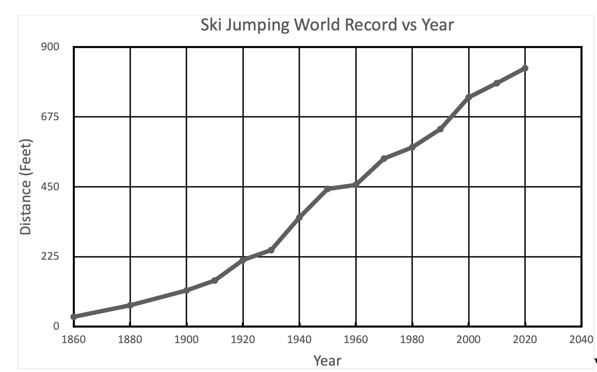
As reference, after its inaugural meet in 1970, the Copper Peak hill record stood at 440 feet (134m). At that time, the world record of 541 feet (165m) was set by East German Manfred Wolf on the Yugoslavian hill at Planica. Over the course of ten Copper Peak meets held intermittently from 1970 through 1994, the Copper Peak hill record eventually grew to 518 feet (158m), putting it within spitting distance of the 1970 Planica record.
But meanwhile, the international hill race had accelerated. With major modifications to the Planica hill, the world record had already soared to 686 feet (209m). By 2005, it reached an unfathomable 784 feet (238m). Not to be outdone by those Slovenians, Norwegian investments to the Vikersund hill enabled Austrian Stefan Kraft to reset the world record to 832 feet (253.5m) in 2017. And by 2024 back at Planica, Slovenian jumper Domen Prevc inched the record to 835 feet (254.5m).
In the same month, Domen’s younger sister Nika set the womens’ record of 774 feet (236m) at Vikersund, which in these distance scales is not far (7%) behind. In contemporary ski flying where high power to weight ratio is less of a determinant and light weight aerodynamics are paramount to achieving long flights, the gap between mens’ and womens’ distance records may continue to shrink.
As illustrated below, based on hill records as of 2025, Copper Peak is still the sixth largest hill in the world, but it has been dwarfed by the other five ski flying hills (Vikersund, Planica, Kulm, Oberstdorf, Harrochov). All four of the still active European ski flying hills (Harrochov is in disrepair and closed) have been enlarged to K points of 200m or greater, resulting in hill records greater than 240m. (For explanation of K points, see Appendix 1). Moreover, as of this writing, there are 35 other international ski jumps whose distance records are between 140m and 156m, which is within hailing distance (18m) of Copper Peak’s stagnant record.
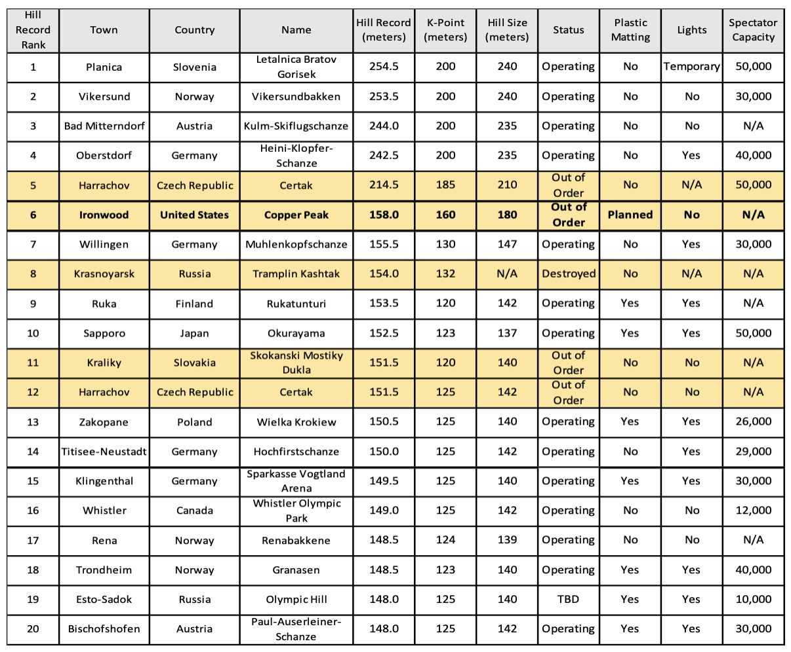
Copper Peak is still the tallest artificial ski flying tower in the world. All of the major European jumps are built into the Alps or mountains of similar scale, and most of the inruns are shaped out of (or closely following) the contour of the natural terrain. The top of those inruns do not tower above the surrounding landscape like Copper Peak. So, if national motivation and financial support is aligned, some European hills can and will continue to go even bigger.
So, how can Copper Peak compete when lagging the competitive hill record race by an amazing 317 feet (96m), as of this writing? Regarding available terrain, Copper Peak cannot, but the relevance of hill size should be considered secondary to advancing the sport. Massive expansion of Copper Peak is not necessary. If financial resources are available, some deepening of the landing hill to remain king of the North American hills may prove feasible, even if it is still the smaller sibling of the international ski flying community. However, if ski jumping is to be rejuvenated as more than a niche North American sport, Copper Peak will still fill a crucial role, without being in the international hill size race.
All of this world record discussion should not be linked with the 2024 Red Bull sponsored stunt on a natural Iceland mountain specially prepared for one ski flyer to blow up the distance record. Japanese ski flyer Kobayashi, an all-time ski jumping great with 35 World Cup wins, two Olympic medals and several world championships on his resume’, was enlisted for the demonstration. Leaving the take-off at 66.5 mph, he soared an absurd 955 feet (291m). A truly impressive athletic feat. Yet, in some respects, it represented a return to the centuries old theme of posing ski jumping as a circus act.
At risk of sounding like a broken record, distance should not be the be-all and end-all of ski jumping, even though it markets well and admittedly the sport needs marketing. On the positive side, the existence of larger hills has spearheaded positive changes in ski jumping equipment, technique, and safety. To recall its origins, in the very early years of ski jumping, only style points officially counted in competition. However, for many decades now, ski jumping competitions are scored by a combined total of style and distance points, and appropriately so, since style and distance are unavoidably intertwined.
To their credit, that perceived wet blanket International Ski Federation (FIS) has publicly opposed further increases in hill sizes and does not recognize any world distance records. Hopefully, the hill size race will quell, and a renewed focus will be placed on the competitive skill and elegance of the sport.
9.2 – Physics vs Physique
A ski jumper’s physique and the physics of ski jumping hills are historically intertwined. Over the years, as the hill designs have been revised, the general physique of the elite jumpers has subtly evolved in parallel. With an increased emphasis on aerodynamics regardless of hill size, an unprecedented attention is now given to the details (and regulation) of equipment, optimal flight position, and the jumper’s body weight.
To review, late 19th and early 20th century ski jumps were designed with a relatively flat (if not slightly upward angling) take-off table that propelled the jumper high into the air, sometimes more than 50 vertical feet, even on intermediate size hills. Yikes! It is understandable that such an historically entrenched picture of ski jumping could stifle enthusiasm of youth (or scare parents) considering participation in the sport.
Although good aerodynamics always rewards a ski jumper, the yesteryear jumper’s predominantly vertical flight trajectory lessened the importance of efficient flight aerodynamics. Coupled with the fact that jumping hills were smaller and flight distances shorter, aerodynamics then took a back seat to vertical take-off power, the predominant physical attribute for success. Meanwhile, the impact on the jumper when landing from such heights was greater than today. The likelihood of injury was real if the jumper lost control of his flight while essentially falling out of the sky.
The seemingly awkward flight position(s) popularized during those early times compromised aerodynamic efficiency, but it didn’t matter so much. Competitive jumpers flew in several alternative body positions. A common technique had arms extended horizontally, and torso bent sharply forward at the waist in a so-called jackknife. Eino Wiemeri, an accomplished Ironwood jumper from the 30’s and 40’s, exemplified this flight style. Take-off power and timing, rather than optimum flight aerodynamics, were most critical to winning tournaments.

It was common for an elite jumper like Torger Tokle to be short and stocky with superior leaping (yeah leaping) ability that maximized height early in flight which translated to longer distances. Physical strength to withstand landing forces when descending from such heights was also beneficial. Tokle was described as having the “power of a human howitzer” (42). It is not surprising that the best jumpers of his era would often have physical attributes of a short, 160–180 lb middleweight wrestler accompanied by superior gymnastic ability.
During the latter half of the 20th century, particularly after the 1960’s, hill sizes steadily increased and jumping hill designs standardized at a more downward (9.5° - 10.5°) sloping take-off table along with a longer, flatter knoll. The resulting flight trajectory was lower, usually following within 6 – 15 feet of the landing hill contour. If a jumper wasn’t able to maintain a good flight position or experienced a mid-air difficulty, he had a better chance of navigating his return to earth with only modest repercussions. In contrast, previous generations of jumpers were in effect dropping out of a 3rd or 4th story window.
Excellent ski jumper aerodynamics has always been a key competitive factor on the larger hills, particularly when ski flying was born. Yet, as smaller hill designs also standardized to the lower hanging take-off table and a lower, more lateral flight trajectory, the importance of good aerodynamics on small hills became increasingly important, too. Colloquially speaking, the entire spectrum of ski jumping hills are practicing ski flying, since one relies on the same fundamental techniques, regardless of hill size. He jumps in an instant, but flies for a few or many seconds.
After the era of middleweight sized jumpers, a top flight jumper (or ski flyer) in the 70’s or 80’s was leaner, if not slightly taller, typically falling into the 145–165 lb welterweight class. Timing and power at take-off was still crucial (as it always will be), but optimal flight aerodynamics was increasingly the dominant factor affecting success. The jumper was rewarded for quickly establishing an optimum, steady aerodynamic flight position.
During the 90’s and 2000’s, as ski flying hills were supersized, aerodynamics became the foremost differentiator. The optimal physical attributes of the world class ski jumper continued to evolve. The typical weight of an elite ski jumper had dropped further, now centering in the 120-135 lb featherweight range. Actually, when Matti Nykaenen dominated the 1980’s, he was already a petite 120 lb. He and a few others were flying ahead of the trend.
By the 2010’s, as the hill size race continued, the standard take-off table was dropped a bit further (11° - 12° below level on some hills) with landing hills recontoured accordingly. With flight aerodynamics more than ever the competitive differentiator, there was an inherent advantage in having low body weight and long, light skis. They were edging toward being wing suit flyers without the wing suit.
World class jumpers were (and are) tempted to maximize their flight potential by aggressively reducing body weight, in some instances to unhealthy proportions. A survey of world class jumpers showed that the average body mass index (BMI) in year 2000 was 4 units lower than elite jumpers in 1970. Strategically (and financially) motivated, some jumpers pursued success by becoming self-imposed anorexic flyweights (an ironic term), draining their weight below 120 lb. They were denying what their body frame naturally begged to remain healthy.
As such, regulatory scrutiny and penalties for rules violations regarding ski jumping suits and skis had to be stiffened. In response to the disturbing body weight trend, the governing FIS body introduced rules in 2004 that connected allowable ski length with BMI. For BMI’s greater than 21.0, maximum allowable ski length is limited to 145% of the person’s height. But, for BMI’s less than 21.0, the allowable ski length is shortened according to a predetermined scale. Such regulations have curbed, but not eradicated, the appetite for low body weight extremism.
There is an entire science and set of regulations governing countless aspects of the modern jumping ski design that are not discussed here. Gone are the days of heavy, rigid hickory or wood-fiberglass composite cores of yesteryear, replaced with lightweight predominantly plastic honeycomb cores. Some minimal stiffness is imparted by thin interspersed layers of carbon or fiberglass, but it is amazing to see the modern skis flex like monstrous, overcooked fettuccine in reaction to the jumper’s upward thrust at take-off, fluctuating air currents during flight, and slapping to the ground during landing.
9.3 – Flight Style
As flight aerodynamics became a dominant success factor, the V-style flight position emerged. The V-style is exemplified by the ski tips spread apart while ski backs are close to each other (akin to a jumper’s feet in a duck walk). By the mid-90’s, it became an accepted standard, pioneered as early as 1969 by Polish jumper Miroslaw Graf, and popularized in the late 80’s by the success of Jan Boklov and others. It proved to be aerodynamically superior over a multitude of flight techniques used over the previous 200+ year history of the sport, and finally superceded the symmetrically neat and parallel (Daescher) style popular from the 50’s until the late 80’s. By the 90’s, V-style jumpers began to be rewarded with style points, rather than debited by competition judges or mocked by the ski jumping community.
Although the fluid (air) involved in ski jumping is different than say swimming (water), a key element of success for either athlete is an innate ability to maximize efficiency of movement through the fluid by subtle, but precise positioning and movements. It may be linked with semi-conscious muscle memory, but it can’t be solely taught.
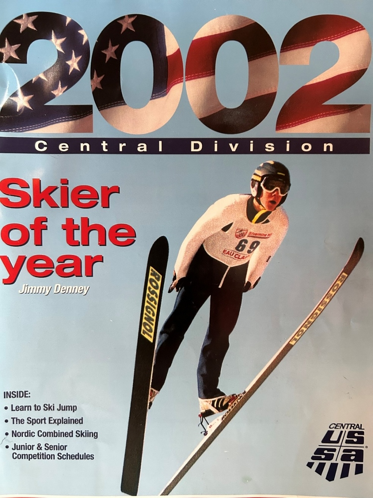
During my ski jumping days, I conjectured that a delta wing flight style was going to be the future. The delta wing is the geometrical opposite ski position to the ‘V’ with ski tips nearly touching, and ski backs positioned several feet apart (akin to a jumper’s feet being pigeon-toed). Picture an upside down ‘V’ (or caret or circumflex, if you are a punctuation mark enthusiast).
I felt that the delta wing was not only more stylish, but it would ultimately prove to be aerodynamically superior to the ‘V’. In the 70’s, few high performing peers periodically emulated delta wings during flight. For me, it often happened unintentionally, as on my memorable practice flight at Wolverine one Saturday. Yet, the delta wing seemed more natural to me than the Daescher (narrow parallel) in the 60’s and70’s, the emerging ‘V’, or its unkempt sibling, the ‘H’ (wide parallel).
Hey, if modern fighter jets are designed with this shape, why wouldn’t it be optimal for efficient ski jumping flight? Such was not the case. In the ensuing years, sophisticated airflow analysis and bench experiments, and the accumulated experiences and data from a couple of generations of ski jumpers, have given a clear nod to the flight benefits of the ‘V’.
Per the cover photo of Supercynski’s book (1), my esteemed local ski jumping colleague John Kusz acquired the natural habit of positioning his skis in a mild ‘V’ before wider V’s (and H’s) became all the rage. With all due respect, I didn’t think it looked all that stylish, but it helped propel John further down the bigger, modern hills where efficient aerodynamics became increasingly crucial to success. And maybe it’s yet another example of semi-conscious athletic genius on his part!
10 - U.S. Ski Jumping Future
What is the future of ski jumping in the U.S.? How can the sport be not only preserved, but grown? Many ski jumping enthusiasts have pondered this question for years. OK, this is America and we’re not talking about displacing the big four (football, basketball, baseball, or hockey) as a major sport. Success in rejuvenating this tremendous sport in the U.S. won’t involve tens of thousands of athletes suddenly dropping their ball, bat, racquet, golf club, or swimsuit and leaping into ski jumping. But, more than just a few hundred jumpers across the nation should be able to enjoy this exhilarating (and safe) sport from early youth to beyond peak physical years.
Regarding how many years that an athlete may compete in ski jumping, in the 1970’s, national level jumpers were fortunate if they could compete into their late 20’s. In more recent decades, a few more U.S. jumpers (similar to the trend in other Olympic sports) have been able to muster adequate financial support to continue to compete at the highest level into their early 30’s. Such support used to be possible only in European countries where wildly popular ski jumping tournaments are televised on national TV and attended by 50,000 – 100,000 people. Having said that, some remarkable ‘recreational’ U.S. athletes have jumped into their 40’s and 50’s, and even longer.
In Europe, ski jumping remains a popular sport in many countries. The influx of women into the sport has further expanded the base of participation and interest. Admittedly, in nearly every European country, football (soccer) is still king. In Austria, football is followed by alpine skiing and ice hockey, but ski jumping is in the next tier. According to recent statistics, there are some 2,200 licensed ski jumpers in Norway. It is not immediately clear if that number includes the entire population of youth participants, but it is supposed not.
Would a youngster start, or a seasoned athlete continue, to be involved in a sport for decades because they’re simply fascinated by its historical relevance? Most assuredly not. Otherwise, Olympic jousting clubs would ring the country.
As with myself and many others, initial ski jumping interest was usually triggered by an enthusiastic parent or other family member deeply engaged in the sport. Such was the case in ski jumping clubs across northern America that nurtured talent ranging from basic recreational enjoyment to national team level. Not everyone has to become an Olympian to gain great satisfaction, camaraderie, and thrills from this sport.
However, with the explosion of the number of sports or quasi-sports now existing, the natural migration to ski jumping as a sport of choice does not occur, at least in sizable numbers. And as the population of legacy ski jumpers ages, a reliance on family lineage to motivate a new generation of youngsters to traipse to the top of a ski jump is less likely.
Despite an order of magnitude greater number of active jumpers in a top tier ski jumping country like Norway as compared to the U.S., a larger core of participation in the U.S. can be realized. It will require reintroduction of the sport to the American culture, initially building upon the existing pockets of ski jumping culture and facilities that already exist. There is passion to build on.
But, to become a top tier ski jumping country, a paradigm shift is required in how ski jumping is viewed and how it is made accessible to a much larger population. A well organized and comprehensive national development strategy can increase momentum in this regard. In one promising initiative, Norway and the U.S. are now collaborating on several nordic skiing fronts.
10.1 – Midwest Status
In the mid-1900’s, nearly every Upper Midwest village with northern European heritage and even slightly hilly terrain had countless number of ski bumps. When contrasting today with an era nearly 50 years ago, the fact is that the number of ski jumping clubs in the U.S. has decreased dramatically. From over 160 ski jumping sites nationwide not so long ago, there remains but approximately 30 ski jumping clubs in 12 states. Of those 30, 12 are located in the Midwest. Minnesota, a historical hotbed of ski jumping and prominent contributor to the U.S. national teams, recently listed only 4 clubs, down from a total of 21 in the late 20th century. Regrettably, Duluth and Ely, two of the most prominent Central Division clubs that produced numerous Olympians in the 70’s and 80’s era, have closed their operations.
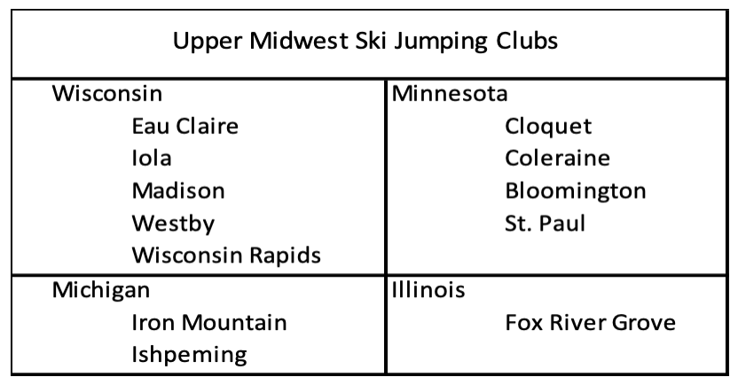
How can the trend of a shrinking ski jumping participation be reversed? A prime example of undying commitment to the sport is the Chicago (Norge Ski Club). In the early 2000’s, while safety conscious Ely Minnesota city officials discussed how to scrap the no longer used 70m Ely ski jumping scaffold, along came Norge Ski Club to purchase the tower for $1. Then, they arranged to dismantle and transport the scaffold the 540 miles to Fox River Grove on 17 flat bed trucks and re-assemble it. So, they salvaged the demise of one club for the improvement of another. Now, that’s commitment.
Today, Norge is one of several ski jumping clubs that have adapted a comprehensive approach to advance the sport. It includes a jumping hill complex that provides facilities and coaching from the smallest beginner hill to a Normal Olympic sized hill. An organized team of trained coaches offer to guide the earliest beginners to seasoned Olympic class jumpers. Within one complex, the jumper can graduate through sensible hill size steps of 5m, 10m, 22m, 47, and 72m.
Besides the towns listed above, other ski jumping hills and hills have sprung up in central Wisconsin, such as Cameron, Minocqua, Oconomowoc, and Rome. So, there is real hope for Midwest ski jumping.
10.2 – Enough Large Hills
Is North American ski jumping handicapped by lack of large hill facilities?
The answer to this question is ‘no’. From either an international competitive or regional recreational perspective, it is not a limiting factor. First of all, large hills are not required for the majority of ski jumping population to thoroughly enjoy the sport at recreational levels. Secondly, although large hills are prerequisite to compete on the international stage, the number of large hill ski jumps in this hemisphere is sufficient for near term growth of the sport.
Benefiting from regional commitments, as well as major investments for Olympics hosted by North America over the past few decades, the U.S. (and our sovereign Canadian neighbor) have 20 of the 200 largest ski jumps in the world. With 10% of the world’s largest ski jumps and the current modest level of participation in the U.S. and Canada, the high end of the ski jump scale is covered well. Of course, periodic investments for upgrades or maintenance are required as facilities age.
The following table summarizes the largest ski jumping facilities in North America, ranked by hill record distance. Data extracted and compiled from Ski Jumping Archive (skisprungschanzen.com).
| City | Hill Area | NA Rank | World | K-Point* | Max Flight | Record |
|---|---|---|---|---|---|---|
| Ironwood, MI** | Copper Peak | 1 | 6 | 145 | N/A | 158 |
| Whistler, BC | Olympic Park | 2 | 16 | 125 | 142 | 149 |
| Iron Mountain, MI** | Pine Mountain | 3 | 33 | 120 | 133 | 144 |
| Park City, UT | Olympic Park | 4 | 43 | 120 | 134 | 139 |
| Thunder Bay, ON | Big Thunder | 5 | 47 | 120 | 136 | 137 |
| Lake Placid, NY | MacKenzie | 6 | 48 | 115 | 128 | 136 |
| Westby, WI** | Snowflake | 7 | 55 | 108 | 123 | 130 |
| Steamboat Springs, CO | Howelsen | 8 | 58 | 114 | 127 | 127 |
| Calgary, AB | Alberta Olympic Park | 9 | 60 | 114 | 122 | 125 |
| Whistler, BC | Olympic Park | 10 | 102 | 95 | 104 | 110 |
| Lake Placid, NY | MacKenzie | 11 | 111 | 90 | 100 | 108 |
| Whistler, BC | Olympic Park | 12 | 112 | 90 | 103 | 108 |
| Calgary, AB | Alberta | 13 | 120 | 89 | 95 | 107 |
| Steamboat Springs, CO | Howelsen | 14 | 129 | 90 | 100 | 106 |
| Park City, UT | Olympic Park | 15 | 138 | 90 | 100 | 105 |
| Brattleboro, VT | Harris | 16 | 140 | 88 | 98 | 104 |
| Leavenworth, WA | Bakke | 17 | 147 | 100 | N/A | 104 |
| Ishpeming, MI** | Suicide | 18 | 162 | 90 | 96 | 102 |
| Squaw Valley, CA | Papoose Peak | 19 | 180 | N/A | N/A | 99 |
| Eau Claire, WI** | Silvermine | 20 | 196 | 85 | 95 | 96 |
Large North American Ski Jumping Hills (46)
K-Point Distance in Meters, and explained in Ski Jump Classification Appendix
**Upper Midwest hills referenced in this memoir*
Closer to home, the upper Midwest is amply equipped with large hills. Four of the largest seven (and six of largest twenty) North American ski jumps are in the upper Midwest (western half of the U.P., southern half of Wisconsin, northeastern Minnesota, and northern Illinois) and situated within 100 to 400 miles of each other, including Thunder Bay, Ontario.
This is not to say that today there is an adequate number of small to intermediate jumping hills to support substantial growth in the sport. But, it’s a smaller mountain to climb when a regional groundswell for the sport arises. As may be inferred from the earlier list of Midwest clubs, there are several active small and intermediate hill ski jumping clubs in Wisconsin and Minnesota attempting to spearhead growth, motivated by an enduring fascination with the sport. They have recognized the importance of a graduated set of small hills within the same complex, in addition to using hills already integral to most existing large ski jumping hill complexes.
10.3 – Lay The Foundation
Should the priority be development of small hills and youth ski jumping programs or large hills and international competition?
The foundation, framing, and roof are all basic and necessary elements during construction of a durable house. And with some variation, following a predefined sequence is necessary for ensuring a lasting structure. From my peanut gallery perspective, a similar philosophy applies for growing the sport of ski jumping in the U.S. The general answer to this question is that the priority should be on the foundation.
In North America, a broad foundation of youth and community involvement is arguably lagging. A clear priority should be given to building from the ground up, focusing on youth and small to intermediate size hills. For ski jumping to be re-established as an integral part of the sporting culture, a critical mass of communities and families must embrace it by supporting youth oriented facilities and programs. I have high admiration for the existing ski jumping clubs continuing to propagate this approach.
Having said that, an occasional festival, such as a Copper Peak ski flying event, can complement the greater, longer term objective. Yet, it can’t be the primary or sole path to resuscitate the sport on a national or even local basis. Even though I was an awestruck 8 year old witnessing Pine Mountain jumpers roaring by, it was inconceivable at that time to envision riding Pine Mountain. If anything, I would have concluded that such an amazing exhibition on a massive hill, although incredible to watch, was entirely out of my reach.
On a personal note, only by my father’s passion and ski club commitment to build a progression of jumping hills did the personal aspiration of riding big hills emerge and become a reality for me. As a junior class jumper, I greatly appreciated and depended on the support of the local ski club. That support included the building and maintenance of the Iron Bowl and then Wolverine hill which fortunately coincided with my junior jumping stint. Underlying all of this was local ski jumping leadership with a vision.
Although I was not directly exposed to it as a youngster, internal tension existed for decades within the Gogebic Range and Wolverine Ski Clubs as to selecting the best strategy to advance the sport of ski jumping, both locally and regionally. For the top down argument, a prominent ski flying facility would create broader visibility to this great sport, and if accompanied by a financial windfall generated by ticket sales and TV exposure, the trickle down effect would benefit the foundation. Unfortunately, it has not panned out that way.
Once Copper Peak was birthed, the sheer magnitude of effort required of the finite sized crew saddled (or honored) with the responsibility of preparing for and executing a ski flying tournament while simultaneously trying to grow a junior / local jumping organization was exhausting and unsustainable. It is truly amazing that amidst all of the attention required to try to make Copper Peak a success, many of those same individuals were directly involved in the Wolverine rebuild and ensuring successful Wolverine meets.
The awesome accomplishment of building the massive Copper Peak ski flying facility by 1969 was started decades earlier with a stretch dream of a venerable group of ski jumping diehards. But, for a number of well documented reasons (1), the operational vision has not yet been realized, stifled periodically by weather misfortune, and more so, a hodgepodge of financial and organizational complexities that either were not handled well and/or could not be entirely anticipated. Suffice to say that solid financial underpinning of favorable TV contracts and 50,000 walk-up attendances so typical in Europe was not going to occur right out of the gate for an admittedly niche U.S. sport, despite ski jumping’s regional legacy. Although the track history of Copper Peak does not match the vision for it yet, ski jumping enthusiasts should bristle when locals try to dump it into a coffin with a toe tag of ‘white elephant’. That is not to say that the path to success will be easy without paradigm shifts in thinking and continued management creativity.
Since the last ski flying tournament in 1994, snowmobile hill climbing and extreme 400m uphill running races from bottom of the landing to the top of the scaffold have periodically complemented Copper Peak operations that have largely subsisted on fees for chair lift and elevator rides to sightsee at the top of the tower during warmer months.
After several decades, tangible optimism exists for a rejuvenated and modernized Copper Peak with multi-season tournaments. Yet another generation of Copper Peak advocates have persevered in keeping the vision alive. Financially bolstered by a recent $20M State of Michigan grant, reprofiling of the landing hill is active, with completion targeted in the 2025-2026 timeframe. Substantial additional work is planned in 2026 to introduce artificial surfaces. Other upgrades can put it in a unique world position it to host international Giant hill competitions beyond winter..
It will be exciting to see if a multi-season calendar for Copper Peak can be established while solidifying its own financial viability with minimal reliance on European ski jumping protocol and politics. Passing those thresholds and thinking beyond local objectives, can its resurgence compliment a greater U.S. national vision for advancement of the sport of ski jumping at all levels? With so much that the sport has to offer, one has to believe this greater opportunity can be realized.
10.4 – Cultural Embrace
Can ski jumping be embraced by today’s North American sporting culture?
By a variety of creative means, a primary objective should be facilitating access of this high intensity sport to youth and family participation so it could spread organically across communities. Critical to future growth of the sport of ski jumping is artificial hill coverings accompanied by lights to enable year round activity. Local club administrators and national ski association(s) must share the same overall vision to relentlessly promote and support the sport.
To cultivate the next generations of ski jumpers, more clubs must have a progressive vision, as already practiced by several clubs in the upper Midwest and other regions of the U.S. The Park City Utah Nordic Ski Club complex offers a graduated scale of multiple hill sizes, including 10m, 20m, 42m, 68m, 100m, and 134m. Similar approaches are practiced in Steamboat Springs CO, Lake Placid NY, Madison (Middleton) WI, and Eau Claire WI. On a smaller, yet impressive scale, the Iola Wi Winter Sports Club keeps the dream alive with a compliment of smaller hills while offering one-on-one coaching. As a result, the 17 men and women nominated to the 2024 - 2025 U.S. Ski Jumping Team hail exclusively from Norge, Lake Placid, Steamboat Springs, Park City, Eau Claire, and Madison ski clubs. It is encouraging to see ski jumping thriving, at least in pockets.
The emergence of womens’ ski jumping adds dramatically to the potential population of ski jumpers. After Therese Altobelli and others ‘broke trail’ in the 70’s and 80’s, womens’ participation steadily grew so that since 1997 the U.S. national championships have been crowning a womens’ champion. Access to world championship participation followed and U.S. women won gold medals in two of the first three years that women were allowed to compete (2009–Lindsey Van, 2013–Sarah Hendrickson). By the 2014 Sochi Olympics, the staid, but economically motivated International Olympic Committee could no longer deny women from ski jumping in the Games.
At the time in 1972, I didn’t know that the Kandahar junior ski jumping club existed in downstate (Brighton, Mi). They arrived one day for an Iron Bowl junior meet, nearly 600 miles from their home base. For those more familiar with the historical footprint of ski jumping, it is but one example of the extent of ski jumping nearly a century ago. In 1928, Henry Hall led the building of a 60m ski jump near Brighton. Before being destroyed in 1937, the hill record of 201 feet was set in 1936 by Ironwood’s own Ted Zoberski.

As a final long cast, with artificial hills and lights, ski jumping venues wouldn’t have to be limited to states with a few months of inconsistent snowfall. OK, ski jumping requires a wholly different type of venue than most sports. But, if hockey and its massive infrastructure can be transplanted and thrive in Fort Lauderdale, Tampa Bay, LA, and of all places, Las Vegas, is it farfetched to envision ski jumping popularized in regions reflexively dismissed as potential sites?
In comparison to alpine skiing, the footprint of ski jumping is small and access to an entire mountain range is not required. As an out-of-the-box idea that is only half-baked, the towering landfills around the country could be developed as ski jumping sites. Wherever jumping facilities might land, the sport can be expanded across broader regions of the country, building upon a durable heritage. Ski jumping was an extreme sport before the term was invented. But now, after legitimately shedding the perception as an extremely dangerous circus act, it retains its unique mix of physical and mental demands, and of course, the ‘trills’.
11 - Hall of Gratitude
I am indebted to the sport and people of ski jumping. In addition to numerous mentions of Dad as a focal point of this tribute, my own honorary first tier ‘Hall of Fame’ would include;
John Kusz
John’s impressive ski jumping exploits are well documented (1) and deservedly so. His love of the sport showed in decades long persistence to ultimately achieving his Copper Peak goal and just as much, continuing to compete at a high level several years past that. Even while the ski jumping culture evaporated in the Ironwood area, his continuing positive attitude and unflinching work ethic inspired me during the many hours of preparing the hills before we could do what we thoroughly enjoyed.
Although ultra competitive and 11 years my senior, he always treated me as a ski jumping partner. Our early morning trips to upper Midwest meets were fun and memorable, even with his intentionally lame ‘Dad jokes’ such as “Looks like we are now entering the town of Donot Pass”. He is a sweetheart even when applying good hearted teasing. The two of us were riding in his car to do an interview at the local radio station to drum up interest in an upcoming Wolverine meet. When I pulled down the passenger visor mirror, he noted that “You don’t need to look good on radio.” Little did he know that I was surreptitiously trying to use the mirror to check out the girl on the side of the road that we had just passed.
Walter (Wally) James Kusz
A member of the ‘Greatest Generation’, Wally rose to a rank of staff sergeant in the U.S. Army while serving in World War II. He was an accomplished gymnast and baseball player, besides making his mark as a ski jumper, including membership on the 1945 U.S. Army ski jumping team that competed in Norway and Germany. After putting his jumping skis down, he shepherded the sport in countless ways, being a driving force (and hands on labor) behind creation of the 30m Iron Bowl, the resurrected 55m Wolverine, and the ski flying Copper Peak. A past president of the GRSC, catalyst for the local youth program in the 60’s and 70’s, and the master of hill preparation for Copper Peak, he covered the whole spectrum of ski jumping, while running a business. With all that going on, the brief periods of coaching that he was able to spare at the start of my jumping career were an invaluable foundation.
Michael Kusz
In the early 70’s, Mike (Wally’s son) was the big brother to many of us younger Ironwood junior jumpers. One of the leading Ironwood jumpers of that period, he was as solid and steady in his jumping style as he was in guiding personalities with a congenial, yet no nonsense approach. No surprise that led Mike to an impressive legal career at several levels, while also serving the ski jumping communities in Iron Mountain and Ironwood.
Robert Shea
As another member of the ‘Greatest Generation’ and close friend of Wally, Bob’s kindness and support that he showed to many of us, including an introverted youngster as myself, did not go unnoticed. Even more so, his extreme dedication to the local sport was evident as one of a handful that were the real force laboring relentlessly in the off season to build or upgrade the Iron Bowl, later Wolverine, while supporting the Copper Peak initiative.
Charles (Charlie) Supercynski
A phenomenal multi-sport athlete as a youth and young man, Charlie translated that passion for sports into being a shepherd for ski jumping. Since the early 1960’s, Charlie has been the multi-purpose glue (dare I say Super-glue!) for advancement of ski jumping on the Gogebic Range. Always approachable and unassuming, he has filled so many roles over the years from behind the scenes, including niches not getting addressed to leading a supervisory board out front. As a junior jumper, I enjoyed the sport while people like Charlie worked hard to bridge the gap between ski club organizations with sometimes confusing or competing objectives. Until I had classes with Charlie as professor at Gogebic Community College, I was only superficially aware of the technical skills he had applied to designing multiple ski jumps, including the Iron Bowl, the scaled down Wolverine, and the 1975 Wolverine overhaul. Through it all, Charlie has also been the unflinching flag bearer, ambassador, custodian, and documentarian for Gogebic Range ski jumping.
Uncle Toivo
Willie and Toivo (Toyk) always alluded to inheriting an exceptional work ethic from their Grandpa John who had to be a fierce dynamo to establish a new homestead from scratch in the early 1900’s in a harsh winter region of a new country and little to no English skills. As a soft spoken adult, Uncle Toivo (also my godfather) was an avid outdoorsman who parlayed that high energy and discipline into being an avid cross country and marathon runner (which in turn his son John excelled). He raised five kids with wife Bertha and worked more than 30 years as a welder and then foreman for the Reserve Mining Co in Silver Bay, Minnesota. In his later years, he expended boundless energy as a founding member (and sometimes called the grandfather) of the 310 mile Superior Hiking Trail, cleared out of rugged forest wilderness along the north shore of Lake Superior that today stretches from Wisconsin south of Duluth to the Canadian border.
12 - Acknowledgments
Special thanks to ___
Technical editing and formatting by Candace Savonen, daughter of Craig.
14 - License & Copyright
This work is licensed under a Creative Commons Attribution-NonCommercial 4.0 International License. You are free to share and adapt this material for non-commercial purposes, provided you give appropriate credit to the author.
15 - Appendix - Ski Jump Classification
In recent decades, several factors have contributed to the resizing and reclassification of ski jumps, including Suicide Hill, as mentioned earlier. Suicide was reclassified from 70m to a larger (90m) hill size by reasons of it being (a) physically modified to enable longer jumps, and (b) the international standard for classification being revised according to the K-point, rather than the P-point (as explained below).
As with many jumps around the world, longer jumps are made possible by lengthening the steep portion of the landing hill. For most hills, this entails digging the landing hill transition deeper into the terrain. On some hills, it has to be accompanied by lengthening the inrun for more speed and/or moving the take-off higher up the hill.
Secondly, the method of classifying a ski jump hill size has evolved to now using the K-Point (or ‘K’), instead of the P-point. Hill size for many decades was defined by the P-point, generally explained as the distance from the take-off to the point on the landing hill where the curvature of the knoll ends and the steepest, constant slope portion of the landing hill begins. The critical point (‘K’) is a point farther down the hill where the steepest, constant slope section (from ‘P’ to ‘K’) ends and the hill begins to flatten out.
In a conventional hill set up, the vast majority of the jumpers should be landing somewhere between ‘P’ and ‘K’. ‘K’ is also called the construction point in today’s nomenclature. In competition, ‘K’ is used as the reference distance upon which distance points are calculated and added to (or subtracted) from style points. If a jumper reaches ‘K’, he has had a competitive jump.
If a jumper flies significantly past ‘K’ and lands on the increasingly flatter slope, the increasing impact on the jumper’s body can compromise his safety. Based on results from trial rides prior to the tournament, speed and distance for the ensuing competition is determined by officials selecting the inrun gate at the top of the hill that moderates the number of jumpers exceeding ‘K’.
In 2004 there was another development. The FIS redefined hill size according to yep, the Hill Size point (HS). This is the maximum distance that a jumper can still expect to land safely. It is downhill of the ‘K’ point, approaching the dip of the landing. HS and hill record should be in close proximity. The prevailing opinion is that the ‘K’ designation of a hill is still the most useful and consistent indicator of hill size and pertinent to competitive results. Conversely, for solely marketing purposes for long distance and hill records, then HS is the better dimension to use.
Based on data from several sources, hill size proportions are illustrated below that includes hill sizes of;
- Prominent U.P. hills, i.e. Wolverine, Suicide, Pine Mountain, and Copper Peak.
- Olympic standards, i.e. Olympics Normal and Olympics Large.
- FIS designated classes, i.e. Small, Medium, Normal, Large, Giant, and Ski Flying.
Note: Depending on the reference chosen, there are either 5 or 6 hill size steps. For purposes here, the six step naming convention is adopted, which includes the Giant range. It provides better resolution between Large and the ever-expanding Ski Flying range.
Per the figure above, the green bars encompass the range of normal flight distances, spanning from slightly uphill of ‘P’ and down to ‘K’. Light blue bars indicate the range from ‘K’ to the maximum safe distance ‘HS’, for which the hill is designed. Official records are also marked, which exceed the ‘HS’ designed maximum on some hills.
With its inaugural tournament in 1970, Copper Peak was classified as the only Ski Flying hill in North America, and one of six worldwide. During the past few decades, hill enlargement has continued on all other Ski Flying hills except Copper Peak. Per the updated FIS classification method, Copper Peak should now be designated as a Giant hill.
Another pertinent observation is that Pine Mountain and Suicide straddle hill sizes specified for the Olympics, thus offering a progression of hill sizes necessary for regional and national ski jumper development. Meanwhile, Wolverine was a noteworthy stepping stone from Small to Olympic size hills.
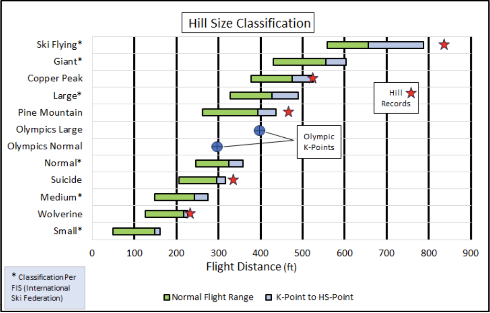
Pine Mountain is classified as a Large ski jump now. Yet, the distinction between it and Copper Peak is nearly blurred in terms of longest recorded distances. Copper Peak’s hill record has been standing still at 518 feet since its last meet in 1994 while in subsequent years continued modifications to Pine Mountain has yielded the current record of 472 feet that is within 10% (or less than 50 feet) of Copper Peak’s record and its 1970 vintage hill design.
16 - Appendix - Hill Preparation
Ski jump hill snow surface preparation continues to evolved into a science. In the 70’s, the creation of supersized hills, such as Copper Peak, forced innovation. Wally Kusz, Leno Slanzi, Bob Shea and several others had to be creative to deal with the sheer size of Copper Peak’s inrun and landing hill. With a relatively small crew at hand, a large scale snow sled was pulled up the massive landing by a cable and pulley system attached to a bulldozer at the bottom of the hill (1). To snow the 469 foot inrun, sacks of snow got an elevator ride to snow the scaffold top and a smaller sled was used to snow the lower inrun portions.
On smaller hills in the 1970’s, such as the Iron Bowl and Wolverine, most of the work was purely manual. The Ironwood Daily Globe always did a fine job of supporting local ski jumping, even alluding to the physical workout associated with getting the 55m in tournament shape after another hefty snowfall.
Instead of my repeated emphasis in this memoir that hill preparation was a labor intensive task, I could choose to look at hill preparation as our own form of cross training. In one instance, the local Daily Globe newspaper included a feature photograph of some lean 18 year old lad with his trusty Yooper scoop clearing the landing of excess snow. The lad was apparently hoping to ride that day (didn’t happen) since he had his jumping suit and boots on while pushing snow off the hill and working up a sweat.

After completing the first step of clearing the hill of the soft fluffy stuff that is not conducive for creating a firm, fast surface, the available team divides and conquers the remaining preparation of the landing hill and the scaffold / inrun. Professional grooming of a major league baseball infield may be landscaping art, but the snowscaping skill applied to final preparation of ski jump surfaces is no child’s play, either. A garden rake and a shovel are the essential tools of ignorance, at least for most hills where larger or advanced equipment is not available. The careful leveling and smoothing of any ripples over the hundreds of feet of inrun length and its curvature are done with care and pride. For major hills and events, specially designed mechanical sleds (ex: a ski jump inrun tiller) have become standard in the past few decades.
Today, the major international and more prominent regional jumps have an inrun track of standardized width and depth incorporating composite materials consisting of ceramic, porcelain, or thermoplastic, complemented by controlled cooling systems. So, near uniform track friction is assured. If the cost can be justified, a technologically superior artificial track eliminates inrun speed variance, at least as a function of weather. On those hills, gone are the days when jumpers hoped that inrun preparation included ‘sugar’ snow, the small granular snow-ice particles that forms naturally after several days or weeks of sunlight ‘seasoning’. Sugar snow was a skiers delight for consistent speed and tracking.
In the past, the track speed can vary widely. In rare instances, especially near the end of a long practice or meet day, the inrun can transform into solid ice. Conversely, if heavy, wet snow falls so rapidly that the track can’t be kept clear, the resulting snail slow track speed caused by excessive suction on the ski bottom renders skiing impractical. Two of us tried practice riding Wolverine one day when soft, wet snow was falling heavily. The resulting speed at take-off was so slow that we pounded the top of the knoll. It was an unexpected encore to the half-scaffold Iron Bowl stunt attempted a half decade earlier.
Preparation of the landing hill is less meticulous, but more laborious. Diligence is required to create a smooth, firm landing plane that follows the contour of the designed hill profile over a much wider and longer distance than the narrow inrun. Without heavy equipment available, the work was/is purely manual. The large ski jumping skis are well suited for much of this task. After scraping (or using gravity to effectively plow excess soft snow sideways down the hill with skis), it can be more easily discarded to the side.
Final sidestepping is an acquired skill. It involves short hopping (akin to jumping rope) simultaneously with both skis progressing steadily down the hill an inch or two with each hop while maintaining ski edges on the steep slope. The resulting small, closely spaced snow ridges running perpendicular to the length of the landing are a beauty to behold. Or so we thought when admiring our handiwork.
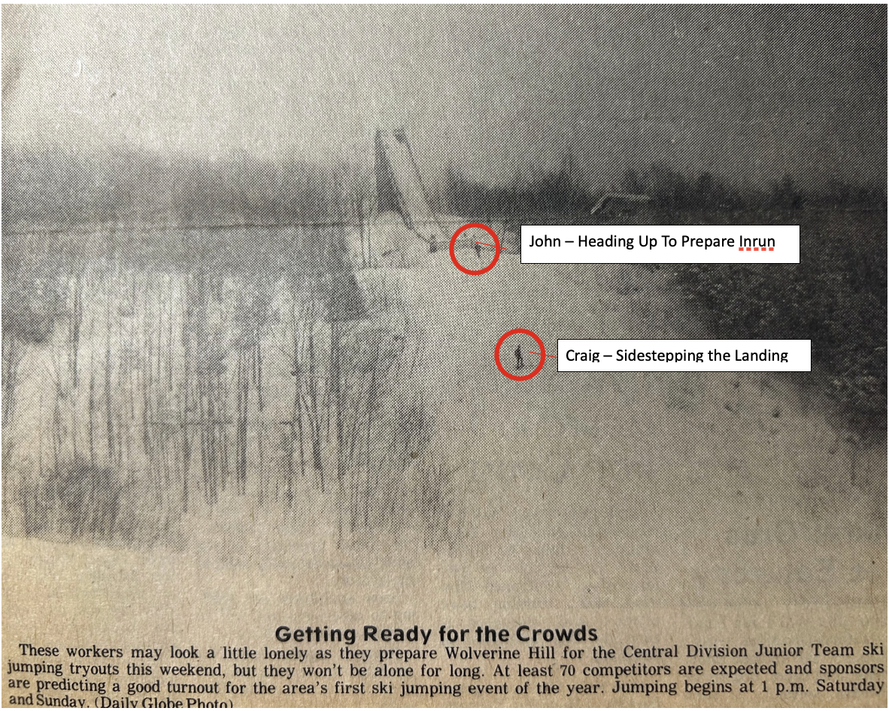
17 - References
- Soaring With The Eagles: The Copper Peak Story, Charles Supercynski (2012).
- Jerry Martin - 1973 U.S. National Ski Jumping Champion, Duluth News Tribune.
- Curry Hill Ski Jump, Ironwood - 1923, Gogebic Iron Range History, David Kangas.
- Wolverine Ski Jump During 1940’s Tournament, Wolverine Nordic Trails Archives and Bob Carli.
- Newspaper Article reference, For The Love of Skiing, Alan K. Engen, 1998.
- Teenaged Willie Savonen Action Pose, Wendy (Savonen) Hicks.
- Suicide Bowl Ski Jumping Tournament - circa 1940, Ishpeming Ski Club (ishskiclub.com).
- Basic Ski Jump Hill Terminology, Ski Jumping Hill Archive.
- Iron Bowl 30m and 15m Ski Jumps - 1971, Charles Supercynski (1).
- Telemark Landing, Eurosport.
- Willie Savonen Junior Jumper - circa 1946, Wendy (Savonen) Hicks.
- Craig Savonen Junior Jumper - 1973, Craig Savonen.
- Canadian National Ski Team Member Peter Wilson on Copper Peak, Ironwood Daily Globe.
- Craig’s Map of Midwest Region Ski Jumps, Craig Savonen.
- The ‘New’ Wolverine in the Late 1970’s, Charles Supercynski (1).
- 1976 Gogebic Range Ski Jumping Octet at Wolverine, Ironwood Daily Globe.
- Suicide Bowl Ski Jumping Complex - Ishpeming, Ishpeming Ski Club (ishskiclub.com).
- Henry Hansen In Mid-Flight Rotation, Charles Supercynski (1) via Mike Andrashi.
- Empire Stadium Ski Jump, Vancouver - 1954, Tom Harris - ‘Temporary Ski Jumps’ (The Operable Window).
- Soldier Field Ski Jumping - 1937, fleetfeet.com.
- Early 1970’s Middleton Artificial Inrun, Madison area newspaper article.
- 2020’s Artificial Inrun Track, Olympic Explainer, Larry Lage Michigan Associated Press.
- View From Top of Suicide Hill, Ishpeming Ski Club (ishskiclub.com).
- Copper Peak Vista, copperpeak.net.
- Westby Snowflake K108 Ski Jumping Hill, Snowflake Ski Club internet site.
- Savonen - 1979 Junior National Tryouts at Wolverine, Ironwood Daily Globe.
- Pine Mountain Scaffold - circa 1959, amazon.com.
- Papoose Olympic Ski Jumping Hills, Squaw Valley - 1960, Ski Jumping Hill Archive.
- Westby Snowflake K108 Ski Jumping Hill, 1979 Snowflake Ski Club meet program.
- Dave Engstrom (the Green Hornet) in Flight, David Engstrom.
- Winter Olympic Injuries, By Sport, British Journal of Sports Medicine, Graphic Washington Post, February 2014.
- Percentage of Athletes Losing Time to Injury in 2018 Olympic Winter Games, British Journal of Sports Medicine.
- Ski Jumping Hill Archive, Ski Jumping Archive (skisprungschanzen.com).
- Ski Jumps Worldwide, Ski Jumping Archive (skisprungschanzen.com).
- Historical Ski Jumping Facilities per Country, Ski Jumping Archive (skisprungschanzen.com).
- Olympic Ski Jumping Medal Count By Country (1924 – 2022), Compiled from “List of Olympic Medalists in Ski Jumping”.
- Matti Nykaenen – 1988 Calgary Olympics, Mark Caldwell, AFP.
- Holmenkollen Ski Jump - 1980’s, unknown magazine article.
- World Record Ski Jumping Distance, data compiled from ‘List of Longest Ski Jumps’.
- Largest Ski Jump Hills Based on Distance Record, data extracted and compiled from ‘Ski Jumping Archive (skisprungschanzen.com)’.
- Eino Wiemeri “The Flying Finn” at Wolverine - 1936, Wolverine Nordic Trails Archives.
- Newspaper Comment About Torger Tokle, For the Love of Skiing, Alan K. Engen.
- V-Style Flight - 2001 Vintage, 2002 USSA Central Division magazine cover, Wendy Ragotzkie.
- John Kusz in Copper Peak Flight, Soaring With The Eagles: The Copper Peak Story, Charles Supercynski, 2012 (1).
- Active Ski Jumping Clubs U.S. Midwest - 2024, compiled from Generally Available Information.
- Large North American Ski Jumping Hills, data extracted and compiled from Ski Jumping Archive (skisprungschanzen.com).
- 1930’s View of 60m Brighton Mi Ski Jump, Genal Pratt.
- Hill Size Classification and Examples, data Extracted and Compiled from ‘The Ski Jumping Hill Archive’.
- Scooping the Wolverine Outrun, Ironwood Daily Globe.
- Wolverine Hill Preparation - 1979, Ironwood Daily Globe.